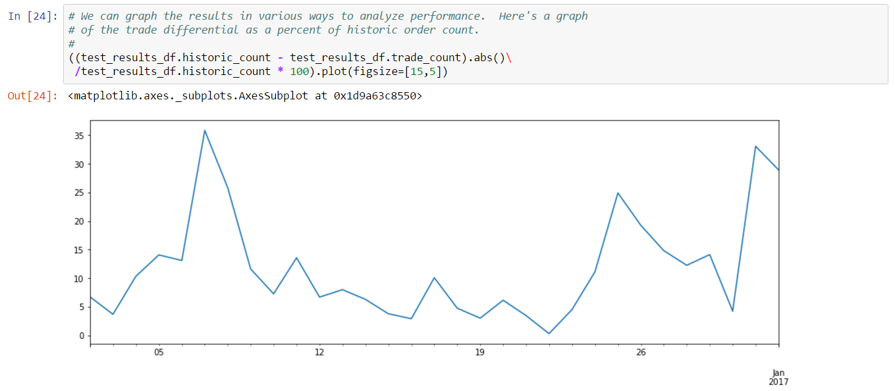
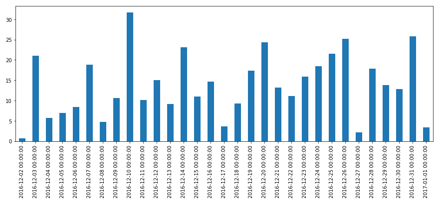

EVE Online is unique among online games in that the in-game market has significant importance to players, regardless of the game play style they choose to pursue. Whether in high, low or null security, many (probably all) players rely on EVE’s markets to buy and equip ships, sell acquired or produced goods, buy supplies needed for various endeavors, and otherwise fill gaps in the set of things needed to pursue various play styles.
As the market has long been an important feature of EVE, some players have similarly focused on developing tools and strategies to support the use of markets. In the early days, these tools were intended to supplement standard play styles, for example making it easier to track market participation (e.g. positions, open orders) as part of a larger strategy (e.g. mining, production, conquest). However, as the game has grown, so has the sophistication of the markets, and in modern EVE “playing the markets” is a valid play style pursued by many players. Third party tool developers have adopted to these changes as well, with many new tools written explicitly to support profiting from the market. CCP, for their part, has responded by providing more real-time data (e.g. five minute market snapshots), and more visibility into alternative markets (e.g. citadel markets). The combination of new tools and rich data has made it possible to implement many “real life” trading strategies that were previously difficult to execute1.
This book attempts to be a systematic discussion of data driven analysis and trading strategies in EVE’s markets. The strategies we derive here rely on public data provided by CCP. Not all of this data is market data and, in fact, more complicated strategies often rely on non-market data. Regardless, all of this data is publicly available: the strategies we describe here don’t rely on non-public or otherwise proprietary data. We derive concepts and strategies using publicly available tools, and we share our techniques through a number of examples (including source code). While the example code we present here is suitable for illustrative purposes, serious market players will likely want to write custom, optimized code for certain strategies (as the author does).
The remainder of the book is organized as follows:
This chapter explains the mechanics of EVE markets and introduces the various sources of market data we use to develop trading strategies. We also introduce the tools we’ll use in the rest of the book to develop our strategies. We end the chapter with several examples illustrating these tools.
EVE markets are governed by a set of rules which define how orders are placed, how they are matched, and what charges are imposed on the participants in a trade. Market structure in EVE is somewhat unique, but if comparisons to actual financial markets must be made, then EVE markets are most similar to a commodities spot market. Commodities markets trade physical assets (or rather, the right of ownership of assets), much the same as trading occurs in EVE markets. A “spot market” is a market in which assets are exchanged at current prices, as opposed to prices guaranteed by a contract (e.g. futures markets).
Many good descriptions of EVE markets are already available on the web. We recommend reading EVE University’s Trading Introduction for a thorough overview of the interface, important skills and basic mechanics. Rather than recount that description here, we instead provide a more academic treatment of some key aspects of EVE markets below.
There are two order types in EVE markets:
Although this terminology is standard in financial literature, the EVE UI does not use these terms in order placement screens. Generally speaking, if you are placing an order using the “advanced” UI screen (with a duration other than “immediate”), then you are placing a limit order. Otherwise, you are placing a market order. This is true even if your limit order is matched immediately, and has important consequences in terms of trading cost (see below).
Orders are handled “First In, First Out” (FIFO), meaning the sequence of order arrival determines priority for matching with other orders. When a sell order is placed, the items being sold are placed in escrow at the seller’s location. If a sell order is filled, then the sold items are moved to the buyer’s hangar at the seller’s location. In other words, all transactions occur at the seller’s location. This has at least two important consequences for trading strategies:
Market participation from player-owned structures is a relatively recent feature (at time of writing). However, the number of such participants is growing, making it important to consider access risk when buying goods from sellers in these structures.2
Trade prices in EVE markets are determined by order matching rules. Unlike other financial markets, there is no facility for price negotiation or auction, although some of these features exist in secondary markets (e.g. the contract system). Sell orders in EVE have a location, price, quantity and minimum volume. Buy orders have a location, price, quantity, minimum volume and range. A pair of orders match when:
The price at which the transaction occurs must satisfy the following constraints:
The effect of precedence rules means that some care must be taken when pricing orders. For example, suppose a sell limit order is placed for 100 ISK. Suppose further that this order is currently the best available sale price (i.e. the first, lowest price available in the current location). If a buy limit order is then placed for 101 ISK, then this order will match immediately at a price of 101 ISK (not 100 ISK) because the sell order has precedence. A similar behavior occurs when buy limit orders have precedence.
EVE markets impose two fees on orders:
Broker fees are charged as a percentage of the total order value, with the charge normally between 2.5% and 5% (adjusted by standing and the Broker Relations skill). Sales tax is charged as a percentage of the matched order volume multiplied by the match price, with the charge normally between 1% and 2% (adjusted by the Accounting Skill). Sales tax in player-owned structures is determined by the owner and may be lower than the normal range.
There are two important consequences of this fee structure:
Training Broker Relations and Accounting skills is usually mandatory for serious EVE market players as these skills at max training reduce fees by a significant amount.
The primary live source of information for EVE markets is the game client UI which shows a live view of the current order book for each asset, as well as historical pricing information. CCP provides third party developer APIs which expose similar information (see below), but the game client is always the most up to date view of the markets. Several important metrics are visible from the game client including the volume (total assets traded) to date, and the current spread (difference between best buy price and best sell price) between buyers and sellers. The order book for a given asset displays price, volume and location for each order, but does not display the names of market participants. However, the names of market participants are recorded and visible to each counter-party when a transaction is completed. This is a unique feature of EVE markets which is quite different from other financial markets where anonymity is preserved between counter-parties.3 This feature also provides an opportunity for traders to gather more information about other market participants, for example by buying or selling in small quantities to competing bids in order to discover the names of competitors.
Recent EVE expansions have added the ability to create market hubs in player-owned structures. These hubs are added to the market for the region they are located in, allowing orders to be placed from player-owned locations. Although market hubs are now included in regional markets, the player-owned structure itself may not be publicly accessible, or accessibility may change during the course of a day’s market events. As a result:
It is generally safe to sell to orders placed from player-owned structures. However, great care should be taken when buying from orders placed from player-owned structures. Missing location information in out of game data sources is mostly an annoyance right now as workarounds exist to obtain the needed information.
EVE has a large secondary market called the “contract system” which allows for direct player to player exchange of numerous assets, including assets which are not tradable on EVE markets (e.g. fitted ships). We don’t cover the contract system is this book, mainly because there is currently no reliable third party API to gather information about available contracts.
As noted above, market data is visible in the game client in two separate views:
The game client always shows the most recent view of market data. All other data sources (e.g. third party developer sources) lag the game client. It’s also worth noting that the game client is the only EULA-approved way to participate in the market by buying or selling assets.4
Data driven development of trading strategies is usually conducted offline, preferably using several years of market data. CCP has only recently invested effort in making market data easily accessible to third party developers. Historically, market data was gathered through crowd sourcing efforts by scraping cached data stored in the game client.5 Scraped data was then aggregated and made available by third party sites like EVE Central. Asset coverage relied on having enough players interested in regularly viewing certain assets (so that the client cache would be refreshed regularly). The fact that players themselves were providing data also raised concerns about purposely modifying data to affect game play. Despite these limitations and risks, crowd sourced data was the primary source of market data for many years.
In 2015, CCP started providing market history, order book, and market pricing data through their “CREST” API. CREST is a REST-based web API which supports both public and authorized data endpoints. Authorized endpoints use the EVE Single Sign-On service based on OAuth access control. CREST authorization is only used for certain player or corporation related endpoints. Market data can be accessed on CREST without authentication. When market modules were released for player-owned structures (e.g. Citadels), public buy orders placed in these modules were eventually made visible in CREST market data. However, CREST provided no mechanism for resolving the location where these player-owned structures resided, making it difficult to implement the same order matching rules as provided in the game client.
While CREST was an important upgrade for third party developers (as compared to the XML API), CCP significantly modernized third party APIs by releasing the EVE Swagger Interface (ESI) which exposed a new REST-based web API documented with Swagger. Swagger documentation allows the use of many convenient tools for third party developers, such as API browsers and client generators in a variety of languages. Swagger also provides clean support for versioning and authorization, making it much easier for CCP to evolve the API over time. The ESI provides the same market data as in CREST with two important upgrades:
The ESI uses the same OAuth based authorization scheme as CREST. At time of writing, CCP has declared ESI as the API of the future and has deprecated both CREST and the XML API. However, CCP has stated they will keep the XML API and CREST active at least until ESI reaches feature parity. Unless otherwise indicated, examples in this book which require direct access to live market data will use the ESI endpoints.
The remainder of this section describes the main market data ESI endpoints in more detail.
The market history endpoint returns a daily price summary for a given asset type in a given region. In financial modeling terms, this data is similar to daily stock market data. The market history endpoint returns all data from the start of the previous calendar year. Note that data for the current day is typically not available until approximately 0800 UTC the following day.
We’ll use market history to demonstrate the use of the ESI. ESI endpoints follow REST conventions and can always be accessed using the HTTP protocol. For example, the following URL will return market history for Tritanium (type 34) in Forge (region 10000002):
https://esi.tech.ccp.is/latest/markets/10000002/history/?datasource=tranquility&type_id=34The result of this request will be a JSON formatted array of values of the form:
{
"date": "2015-05-01",
"average": 5.25,
"highest": 5.27,
"lowest": 5.11,
"order_count": 2267,
"volume": 16276782035
}where:
What makes the ESI special is the Swagger definition which can be retrieved at:
https://esi.tech.ccp.is/latest/swagger.json?datasource=tranquilityThe Swagger definition is a structured description of the endpoints of ESI, including the name and type of the arguments required, the format of the result, and any authorization that may be required. Tools make use of this definition to automatically generate documentation and API clients. For example, the documentation of the above endpoint can be found here.
In addition to the response body, the ESI also returns several important HTTP response headers. There are three headers you should observe:
The expires field is important for automated collection of data, and for competitive analysis. The tools we describe later in this chapter use expires to drive regular downloads of the data for historical analysis. The expires field also tells you how frequently other market participants can see fresh data (unless they are using the game client).
The market order book endpoints return a view of the current orders for a given region, optionally restricted to a given type. The ESI endpoint to retrieve this data is “get market region orders”. The following URL will retrieve the first page of orders for Tritanium (type 34) in Forge (region 10000002):
https://esi.tech.ccp.is/latest/markets/10000002/orders/?datasource=tranquility&order_type=all&page=1&type_id=34Leaving off type_id=34 will return all orders for all types in the given region. The result of this request will be a JSON formatted array of values of the form:
{
"order_id": 4740968511,
"type_id": 34,
"location_id": 60005599,
"volume_total": 1296000,
"volume_remain": 952089,
"min_volume": 1,
"price": 10,
"is_buy_order": false,
"duration": 90,
"issued": "2017-01-06T22:29:36Z",
"range": "region"
}where:
Order book data is the most current out of game view of the markets and is therefore very important data for many traders. Some important properties about order book data:
Order Book Data Gaps
At various points in time, CCP’s order book endpoints have had gaps in the data they provide. These gaps take the form of orders missing from snapshots. A common pattern is to see an order appear in one snapshot, then disappear, then appear again in a later snapshot. The only cases where an order should exit the order book is if it is canceled or completely filled. Also, an order which leaves the order book should never re-appear as order IDs are unique. We’ll see this problem, and a work-around, in Example 4 below. At time of writing, this problem was still occurring, even in the new ESI based endpoints.
Order book data can also be requested directly from player-owned structures. This is done using the “get markets structures” endpoint. Some player-owned markets are not public, despite their buy orders appearing the regional market, but for those that allow access, the format of the results is identical to the format returned by the “get market region orders” endpoint.
Certain industrial calculations, such as reprocessing tax, require reference price data computed by CCP on a daily basis. This data is available to third party developers using the “get market prices” endpoint. A request to this endpoint will return an array of price data in this format:
{
"type_id": 32772,
"average_price": 501374.49,
"adjusted_price": 502330.89
}where:
We document this endpoint because some strategies discussed in later chapters need to compute certain industrial formulas.
The last market data endpoint we document is the “get universe structure id” endpoint. This is an authenticated endpoint which provides player-owned structure information in the format:
{
"name": "V-3YG7 VI - The Capital",
"solar_system_id": 30000142
}where:
The use for this endpoint is not obvious until one needs to calculate which orders will match in a given region. As described above, the buy orders which match a given sell order are determined by the location of the sell order, and the range and location of each buy order. Therefore, the location of player-owned structures must be known in order to determine whether buy orders submitted at those structures can potentially match. At time of writing, the structure location endpoint is the only third party API which provides access to the location of public player-owned structures. However, as we discussed in Order Book Data Endpoints, the order book for a region may also display buy orders from non-public player-owned structures. The structure location endpoint can not be used to determine the location of these structures unless the (authenticated) caller is authorized to view this data (for example, the caller is a member of the corporation which owns the player-owned structure). Fortunately, there is at least one third party data source that attempts to document the location of non-public structures. We show an example of using the structure location endpoint, as well as other third party data sources, when we construct an order matching algorithm in Example 3 below.
As noted above, CCP currently does not provide an API endpoint for retrieving individual trades. This lack of data is limiting in some cases, but fortunately a portion of trades can be inferred by observing changes in order book data. This approach is effective for trades that do not completely consume a standing limit order. However, limit orders which are removed from the order book can not be distinguished from canceled orders. Thus, the best we can do is rely on heuristics to attempt to estimate trades we can’t otherwise infer. Because CCP publishes daily trade volume, we do have some measure of how close our heuristics match reality. We’ll derive a simple trade estimation heuristic in Example 4 below.
This section provides an introduction to the tools we use to develop strategies in the remainder of the book. As you may have surmised, access to historic and live market data is critically important for analysis, back test, live testing and execution of trading strategies. Many third party sites provide this data in various formats. At Orbital Enterprises, we’ve created our own market data collection tools which we describe below. Our tools, as well as most modern tools (including the EVE Swagger Interface), use web interfaces annotated with Swagger. We therefore provide a brief introduction to Swagger along with a few tips for working with Swagger-annotated endpoints. The EVE Static Data Export (SDE) is another critical resource for third party developers and is needed for some of the strategies we described in this book. The SDE is provided as a raw data export which most players acquire themselves. At Orbital Enterprises, we’ve created an online tool for accessing the SDE which we use in our examples. We describe this tool below. Finally, we briefly introduce Jupyter which has quickly become the de facto data science tool in python. Most of the examples we provide in the book are shared as Jupyter notebooks on our GitHub site.
Orbital Enterprises hosts a market collection service which provides historic and live access to book data and daily market snapshots (the “Order Book Data” and “Market History” endpoints described above, respectively). The service exposes a Swagger annotated API which can be accessed interactively. Historic data is uploaded nightly to Google Storage organized by date. Although the entire history maintained by the site is accessible through the service API, for research and back testing purposes it is usually more convenient to download the data in bulk from the Google Storage site.
About Swagger
Swagger is a configuration language for describing REST-based web services. A Swagger-annotated web site will normally provide a
swagger.jsonfile which defines the services provided by the site. For example, CCP’s EVE Swagger Interface provides thisswagger.jsonfile.The power of Swagger is that the
swagger.jsonfile can be provided as input to tools which automate the generation of documentation and client code. For example, the Swagger UI will generate an interactive UI for any valid Swagger specification. The Swagger Editor has similar capabilities but will also generate clients (and servers) in a variety of programming languages. In most cases, you won’t ever need to manually inspect a Swagger configuration file (much less learn the configuration language) as the tooling does all the hard work for you.In this book, we introduce many APIs using the Swagger UI. You can follow along by browsing to the generic Swagger UI and inserting the URL for the appropriate
swagger.jsonconfiguration file. Most of our code samples are in Python for which we use the Bravado Swagger client generator. We’ll describe Bravado in more detail below.NOTE: the generic Swagger UI will not work with authorized endpoints of the ESI. This is because of the way single sign-on is implemented with the ESI servers. Using authorized endpoints from batch (i.e. non-interactive) code is likewise challenging. One work around is to use a proxy like the ESI Proxy which we use at Orbital Enterprises. This proxy handles OAuth authorization flows automatically, exposing a much simpler interface to our market strategy code.
Let’s use the Swagger UI to introduce the Orbital Enterprises market collection service. You can follow along by browsing to the interactive UI. The UI lists three endpoints:
These endpoints provide the following functions:
Each endpoint can be expanded to view documentation and call the service. For example, expanding the history endpoint reveals:

Filling in the typeID, regionID and date fields with “34”, “10000002” and “2017-01-15” returns the following result (Click “Try it out!”):

The fields in the result match the “Market History” ESI endpoint with following additions:
The book endpoint has a similar interface but since order book snapshots have five minute resolution (based on the cache timer for the endpoint), you can provide a full timestamp. The endpoint will return the latest book snapshot before the specified date/time. Here is the result of the same query above at 10:00 (UTC):

The result is a JSON object where the bookTime field records the snapshot time in milliseconds UTC since the epoch. The orders field list the buy and sell orders in the order book snapshot. The fields in the order results match the “Order Book Data” ESI endpoint with some slight modifications (e.g. timestamps are converted to milliseconds UTC since the epoch) and the addition of typeID and regionID fields.
The livebook endpoint is identical to the book endpoint with two main differences:
The livebook endpoint is most useful for live testing or live execution of trading strategies. We use this endpoint in the later chapters for specific strategies.
As we noted above, the endpoints of the market collection service are most useful for casual testing or for retrieving live data for running strategies. For back testing, it is usually more convenient to download historic data in bulk to local storage. The format of historic data is described on the market collection service site. We introduce python code to read historic data below, either directly from Google Storage, or from local storage.
The EVE Static Data Export is a regularly released static dump of in-game reference material. We’ve already seen data provided by the SDE in the last section - the numeric values for Tritanium (type ID 34) and The Forge (region ID 10000002) were provided by the SDE. The SDE is released by CCP at the Developer Resources Site. The modern version of the SDE consists of YAML formatted files. However, most players find it more convenient to access the SDE from a relational database. Steve Ronuken provides conversions of the raw SDE export to various database formats at his Fuzzworks site.
At Orbital Enterprises, we expose the latest two releases of the SDE as an online service. The underlying data is just Steve Ronuken’s MySQL conversion accessed through a Swagger-annotated web service we provide. If you don’t want to download the SDE yourself, you may want to use our online service instead. Most of the examples we present in this book use the Orbital Enterprises service.
Because our service is Swagger-annotated, there is a ready made interactive service you can use to access the SDE:

The “Release” drop down at the top can be used to select which SDE release to query against (the default is the latest release). At time of writing, we always maintain the two latest releases. We may consider maintaining more releases in the future. Queries against the online service use JSON expressions which are explained on the main site. As an example, let’s look at a query to determine the type ID for Tritanium. First expand the “Inventory” section, then select “/inv/type”:

We’ll search by partial name. Scroll down until the “typeName” field is visible and replace the default query value with { like: '%trit%' }. Then click “Try it out!” (or just hit enter). You’ll see a result similar to the following:

The result includes all types with names that contain the string “trit” (case insensitive). There are many such types, but the first result in this example happens to be the type we were searching for. Most of the market strategies we describe in this book rely on data in the “Inventory” and “Map” sections of the SDE. You can find reasonably recent documentation on the data stored in the SDE at the crowd sources Third Party Developer documentation site. We provide more explicit documentation in the sections below where we use the SDE.
Our method for developing trading strategies could loosely be called “data science”, meaning we use scientific methods and tools for extracting knowledge or insight from raw data. Our main tool is the Python programming language around which a rich set of libraries and methodologies have been developed to support data science. Strategy development is an iterative process, and during the early stages of development it is useful to have tools which are interactive in nature. The Jupyter Project and its predecessor iPython are arguably the most popular interactive tools for data science with Python7. When combined with NumPy and Pandas, the Jupyter platform provides a very capable interactive data science environment. We use this environment almost exclusively in the examples we describe in this book. It is not mandatory, but you’ll get much more out of this book if you install Jupyter yourself and try out some of our examples.
The easiest way to get started with Jupyter is to install Anaconda which is available for Windows, Mac and Linux. Anaconda is a convenient packaging of several open source data science tools for Python (also R and Scala), and also includes Jupyter. Once you’ve installed Anaconda, you can get started with Jupyter by following the quickstart instructions (essentially just jupyter notebook in a shell and you’re ready). If you’re reasonably familiar with Python you can crash ahead and click “New -> Python 3” from your local Jupyter instance to create your first notebook. If you’d like a more comprehensive introduction, we like this tutorial.
Python 2 or Python 3?
If you’re familiar with Python, you’ll know that Python 3 is the recommended environment for new code but, unfortunately, Python 3 broke compatibility with Python 2 in many areas. Moreover, the large quantity of code still written in Python 2 (at time of writing) often leaves developers with a difficult decision as to which environment to use. Fortunately, all of the data science libraries we need for this book have been ported to Python 3. So we’ve made the decision to use Python 3 exclusively in this book. If you must use Python 2, you’ll find that most of our examples can be back-ported without difficulty. However, if you don’t have a strong reason to use Python 2, we recommend you stick with Python 3.
The main interface to Jupyter is the notebook, which is a language kernel combined with code, text, graphs, etc. A language kernel is a back end capable of executing code in a given language. All of the examples we present in this section use the Python 3 language kernel, but Jupyter allows you to install other kernels as well (e.g. Python 2, R, Scala, Java, etc.). The code within a notebook is executed by the kernel with output displayed in the notebook. Text, graphic and other non-code artifacts are handled by the Jupyter environment itself and provide a way to document your work, or develop instructional material (as we’re doing in this book). Notebooks naturally keep a history of your actions (numbered code or text sections) and allow you to edit and re-run previous bits of code. That is, to iterate on your experiments. Finally, notebooks automatically checkpoint (i.e. regularly save your progress) and can be saved and restored at a later time. Make sure you run your notebook on a reasonably powerful machine, however, as deeper data analysis will use up significant memory.
The environment installed from Anaconda has most of the code we’ll need, but from time to time you may need to install other code. In this book, we do this in two cases:
We’ll install a few libraries that typically aren’t included in Anaconda. In fact, we’ll do this almost immediately in the first example below so that we can use the Bravado library for interacting with Swagger-annotated web services.
As we work through the examples, we’ll begin to develop a set of useful libraries we’ll want to use in later examples. We could copy this code to each of our notebooks but that would start to clutter our examples. Instead, we’ll show you how to install these libraries in the default path used by the Jupyter kernel.
We’ll provide instructions for installing missing libraries in the examples where they are needed. Including your own code into Jupyter is a matter of ensuring the path to your packages is included in the “python path” used by Jupyter. If you’re already familiar with Python, you’re free to choose your favorite way of adding your local path. If you’re less familiar with Python, we suggest adding your packages to your local .ipython folder which is created the first time you start a Python kernel in Jupyter. This directory will be created in the home directory of the user which started the kernel.
Python Virtual Environments
Notebooks provide a basic level of code isolation, but all notebooks share the set of packages installed in the Python kernel (as well as any default modifications made to the Python path). This means that any new packages you install (such as those we provide instructions for in some of the examples) will affect all notebooks. This can cause version problems when two different notebooks rely on two different versions of the same package. For this reason, Python professionals try to avoid installing project specific packages in the “global” Python kernel. Instead, the pros create one or more “virtual environments” which isolate the customization needed for specific work. This lets you divide your experiments so that work in one experiment doesn’t accidentally break the work you’ve already done in another experiment.
Virtual environments are an advanced topic which we won’t try to cover here. Interested parties should check out the virtualenv package or read up on using Conda to set up isolated development environments. In our experience, it is easier to use
condato create separate Jupyter environments, but instructions exist for usingvirtualenvto do this as well. We document our Conda setup at the end of this chapter for the curious.
We finish this chapter with code examples illustrating basic analysis techniques we use in the remainder of the book. If you’d like to follow along, you’ll need to install Jupyter as described in the previous section. As always, you can find our code as well as Jupyter notebooks in the code directory in our GitHub project.
In this example, we’re going to create a simple graph of market history (i.e. daily price snapshots) for a year of data. We’ve arbitrarily chosen to graph Tritanium in Forge. When we’re done, we’ll have a graph like the following:

We’ll use this simple example to introduce basic operations we’ll use throughout this book. If you want to follow along, you can download the Jupyter notebook for this example. Since this is our first example, we’ll be extra verbose in our explanation.
We’ll create our graph in four steps:
We’ll expand on a few variants of these steps at the end of the example to set up for later examples. But before we can do any of this, we need to install Bravado in order to access Swagger-annotated web services. You can install bravado as follows (do this before you start Jupyter):
$ pip install bravadoInstalling Bravado on Windows
On Windows, you may see an error message about missing C++ tools when building the “twisted” library. You can get these tools for free from Microsoft at this link. Once these tools are installed, you should be able to complete the install of bravado.
Once you’ve installed Bravado, you can start Jupyter and create a Python 3 notebook. Almost every notebook we create will start with an import preamble that brings in a few key packages. So we’ll start with this Jupyter cell:

The first thing we need to do is use the SDE to lookup the type and region ID, respectively, for “Tritanium” and “The Forge”. Yes we already know what these are from memory; we’ll write the code anyway to demonstrate the process. The next two cells import Swagger and create a client which will connect to the online SDE hosted by Orbital Enterprises:

The config argument to the Swagger client turns off response validation and instructs the client to return raw Python objects instead of wrapping results in typed Python classes. We turn off response validation because some Swagger endpoints return slightly sloppy but otherwise usable responses. We find working with raw Python objects to be easier than using typed classes, but this is a matter of personal preference. We’re now ready to look up type ID which is done in the following cell:

We use the getTypes method on the Inventory endpoint, selecting on the typeName field (using the syntax described here). The result is an array of all matches to our query. In this case, there is only one type called “Tritanium” which is the first element of the result array.
Pro Tip: Getting Python Function Documentation
If you forget the usage of a Python function, you can bring up the Python docstring using the syntax
?function. Jupyter will display the docstring in a popup. In the example above, you would use?sde_client.Inventory.getTypesto view the docstring.
Similarly, we can use the Map endpoint to lookup the region ID for “The Forge”:

Of course, we only need the type and region ID, so we’ll tidy things up in the next cell and extract the fields we need into local variables:

Next, we need to create a date range for the days of market data we’d like to display. This is straightforward using datetime and the Pandas function date_range:

With these preliminaries out of the way, we’re now ready to start extracting market data. To do this, we’ll need a Swagger client pointing to the Orbital Enterprises market data service. As a test, we can call this service with the first date in our date range:

We call the history method on the MarketData endpoint passing a type ID, region ID, and the date we want to extract. This method can only be used to lookup data for a single date, so the result is a single JSON object with the requested information. The history endpoint may not have any data for a date we request (e.g. because the date is too far in the past, or the service has not yet loaded very recent data). It is therefore useful to check what happens when we request a missing date:

The result is a nasty stack trace due to an HTTPNotFound exception. We’ll need to handle this exception when we request our date range in case any data is missing.
Using a Response Object Instead of Exceptions
The Bravado client provides an alternative way to handle erroneous responses if you’d prefer not to handle exceptions. This is done by requesting a
responseobject as the result of a call. To create aresponseobject, change your call syntax from:result = client.Endpoint.method(...).result()to:
result, response = client.Endpoint.method(...).result()The raw response to a call will be captured in the
responsevariable which can be inspected for errors as follows:if response.status_code != 200: # An error occurred ...You can either handle exceptions or use response objects according to your preference. We choose to simply handle exceptions in this example.
Now that we know how to retrieve market history for a single day, we can retrieve our entire date range with a simple loop:

The result is an array of market history, hopefully for every day we requested (the last day in the range will usually be missing because the market data service hasn’t loaded it yet). Now that we have our market data, we need to turn it into a plot. We’ll use a Pandas DataFrame for this. If you haven’t already, you’ll want to read up on Pandas as we’ll use its data structures and functions throughout the book. There are many ways to create a DataFrame but in our case the most convenient approach will be to base our DataFrame on the array of market data we just loaded. All that is missing is an index for the DataFrame. The natural choice here is to use the date field in each day of market history. However, these dates are not in a format understood by Pandas so we’ll have to convert them. This is easy to do using datetime again. Here’s an example which converts the date field from the first day of market history:

We’ll turn the converter into a function for convenience, then create our DataFrame:

Last but not least, we’re ready to plot our data. Simple plots are very easy to create with a DataFrame. Here, we plot average price for our date range:

And that’s it! You’ve just created a simple plot of market history.
We walked through this example in verbose fashion to demonstrate some of the key techniques we’ll need for analysis later in the book. As you develop your own analysis, however, you’ll likely switch to an iterative process which may involve executing parts of a notebook multiple times. You’ll want to avoid re-executing code to download data unless absolutely necessary as more complicated analysis will require order book data which is substantially larger than market history. If you know you’ll be doing this often, you may find it more convenient to download historic data to your local disk and read the data locally instead of calling a web service.
All data available on the market data service site we used in this example is uploaded daily to the Orbital Enterprises Google Storage site (you can find full documentation here). Historic data is organized by day. You can find data for a given day at the URL: https://storage.googleapis.com/evekit_md/YYYY/MM/DD. At time of writing, six files are stored for each day8:
| File | Description |
|---|---|
| market_YYYYMMDD.tgz | Market history for all regions and types for the given day. |
| interval_YYYYMMDD_5.tgz | Order book snapshots for all regions and types for the given day. |
| market_YYYYMMDD.bulk | Market history in “bulk” form for all regions and types for the given day. |
| interval_YYYYMMDD_5.bulk | Order book snapshots in “bulk” form for all regions and types for the given day. |
| market_YYYYMMDD.index.gz | Market history bulk file index for the given day. |
| interval_YYYYMMDD_5.index.gz | Order book snapshot bulk file for the given day. |
We’ll discuss the market history files here, and leave the order book files for the next example.
Historic market data is optimized for two use cases:
The tar’d archive files (e.g. tgz files), when extracted, contain files of the form market_TYPE_YYYYMMDD.history.gz where TYPE is the type ID for which history is recorded in the file, and YYYYMMDD is the date of the market history. The content of each file is a comma-separated table of market history for all regions on the given day. Let’s look at a sample file:
$ wget -q https://storage.googleapis.com/evekit_md/2017/01/01/market_20170101.tgz
$ ls -lh market_20170101.tgz
-rw-r--r--+ 1 mark_000 mark_000 2.2M Jan 31 02:55 market_20170101.tgz
$ tar xvzf market_20170101.tgz
... about 10000 files extracted ...
$ zcat market_34_20170101.history.gz | head -n 10
34,10000025,13,2.89,4.50,4.00,7319512,1483228800000
34,10000027,1,0.28,0.28,0.28,155501,1483228800000
34,10000028,44,4.80,4.80,4.80,12336476,1483228800000
34,10000029,19,2.00,5.00,3.50,41728843,1483228800000
34,10000030,735,4.60,4.76,4.64,419745507,1483228800000
34,10000016,964,3.98,4.66,4.36,225219117,1483228800000
34,10000018,4,2.03,2.03,2.03,3046465,1483228800000
34,10000020,367,4.50,4.50,4.50,264925396,1483228800000
34,10000021,1,4.48,4.48,4.48,4500000,1483228800000
34,10000022,3,1.51,1.51,1.51,10145393,1483228800000The columns in the file are:
The data stored in the bulk files has the same format but is organized differently in order to support efficient online requests using an HTTP range header. We construct the bulk file by concatenating each of the individual compressed market files. This results in a file with roughly the same size as the archive, but which needs an index in order to recover market history for a particular type. This is the purpose of the market index file, which records the byte range for each market type stored in the bulk file. Here are the first ten lines for the index file for our sample date:
$ curl -s https://storage.googleapis.com/evekit_md/2017/01/01/market_20170101.index.gz | zcat | head -n 10
market_18_20170101.history.gz 0
market_19_20170101.history.gz 984
market_20_20170101.history.gz 1928
market_21_20170101.history.gz 3678
market_22_20170101.history.gz 4439
market_34_20170101.history.gz 5431
market_35_20170101.history.gz 8953
market_36_20170101.history.gz 12396
market_37_20170101.history.gz 15820
market_38_20170101.history.gz 19108Thus, to recover type 34 we need to extract bytes 5431 through 8952 (inclusive) from the bulk file. We can do this by using an HTTP “range” request as follows:
$ curl -s -H "range: bytes=5431-8952" https://storage.googleapis.com/evekit_md/2017/01/01/market_20170101.bulk | zcat | head -n 10
34,10000025,13,2.89,4.50,4.00,7319512,1483228800000
34,10000027,1,0.28,0.28,0.28,155501,1483228800000
34,10000028,44,4.80,4.80,4.80,12336476,1483228800000
34,10000029,19,2.00,5.00,3.50,41728843,1483228800000
34,10000030,735,4.60,4.76,4.64,419745507,1483228800000
34,10000016,964,3.98,4.66,4.36,225219117,1483228800000
34,10000018,4,2.03,2.03,2.03,3046465,1483228800000
34,10000020,367,4.50,4.50,4.50,264925396,1483228800000
34,10000021,1,4.48,4.48,4.48,4500000,1483228800000
34,10000022,3,1.51,1.51,1.51,10145393,1483228800000Note that this is the same data we extracted from the downloaded archive.
As an illustration of code which makes use of downloaded data (if available), we’ll conclude this example with an introduction to library code we’ll be using in later examples. You can find our library code in the code folder on our GitHub site. You can incorporate our libraries into your notebooks by copying the evekit folder (and all its sub-folders) to your .ipython directory (or another convenient directory in your Python path).
We can re-implement this first example using the following modules from our libraries:
evekit.online.Download - download archive files to local storage.evekit.reference.Client - make it easy to instantiate Swagger clients for commonly used services.evekit.marketdata.MarketHistory - make it easy to retrieve market history in various forms.evekit.util - a collection of useful utility functions.You can view this Jupyter notebook to see this example implemented with these libraries. We didn’t actually download any archives in the original example, but we include a download in the re-implemented example to demonstrate how these libraries function.
In this example, we turn our attention to analyzing order book data. The goal of this example is to compute the average daily spread for Tritanium in The Forge region for a given date. Spread is defined as the difference in price between the lowest priced sell order, and the highest priced buy order. Among other things, spread is an indication of whether market making will be profitable for a given asset, but we’ll get to that in a later chapter. The average daily spread is the average of the spreads for each order book snapshot. At time of writing, order book snapshots are generated every five minutes. So the average daily spread is just the average of the spread computed for each of the 288 book snapshots which make up a day.
We’ll start by getting familiar with the order book data endpoint on the Orbital Enterprises market data service site:

There are actually two endpoints, but we’re only looking at the historic endpoint for now. We’ll cover the “latest book” endpoint in a later chapter. As with the market history endpoint, the order book endpoint expects a type ID, a region ID, and a date. However, the date field may optionally include a time. The order book snapshot returned by the endpoint will be the latest snapshot before the specified time. Here’s an example of the result returned with type ID 34 (Tritanium), region ID 10000002 (The Forge), and timestamp 2017-01-01 12:02:00 UTC (note that this endpoint can parse time zone specifications properly):
{
"bookTime": 1483272000000,
"orders": [
{
"typeID": 34,
"regionID": 10000002,
"orderID": 4708935394,
"buy": true,
"issued": 1481705362000,
"price": 5,
"volumeEntered": 200000000,
"minVolume": 1,
"volume": 43345724,
"orderRange": "solarsystem",
"locationID": 60002242,
"duration": 90
},
{
"typeID": 34,
"regionID": 10000002,
"orderID": 4734310642,
"buy": true,
"issued": 1483260173000,
"price": 4.9,
"volumeEntered": 100000000,
"minVolume": 1,
"volume": 99928181,
"orderRange": "station",
"locationID": 60015026,
"duration": 90
},
... many more buy orders ...
{
"typeID": 34,
"regionID": 10000002,
"orderID": 4733287152,
"buy": false,
"issued": 1483171052000,
"price": 4.69,
"volumeEntered": 5612007,
"minVolume": 1,
"volume": 747984,
"orderRange": "region",
"locationID": 60007498,
"duration": 90
},
{
"typeID": 34,
"regionID": 10000002,
"orderID": 4734141760,
"buy": false,
"issued": 1483239477000,
"price": 4.77,
"volumeEntered": 46906,
"minVolume": 1,
"volume": 46906,
"orderRange": "region",
"locationID": 60003079,
"duration": 90
},
... many more sell orders ...
],
"typeID": 34,
"regionID": 10000002
}The bookTime field reports the actual timestamp of this snapshot in milliseconds UTC since the epoch. In this example, the book time is 2017-01-01 12:00 UTC because that is the latest book snapshot at requested time 2017-01-01 12:02 UTC.
Pro Tip: Converting Timestamps
If you plan to work with Orbital Enterprises raw data on a frequent basis, you’ll want to find a convenient tool for converting millisecond timestamps to human readable form. The author uses the Utime Chrome plugin for quick conversions. You’ll only need this when browsing the data manually. The evekit libraries (should you choose to use then) handle these conversions for you.
Orders in the order book are contained in the orders array with buy orders appearing first, followed by sell orders. To make processing easier, buy orders are sorted with the highest priced orders first; and, sell orders are priced with the lowest priced orders first. Order sorting simplifies spread computations but there’s a catch in that a spread is only valid if the highest buy and lowest sell are eligible for matching (except for price, of course). That is, the spread is not always the difference between the highest price buy and the lowest price sell, because those orders may not be matchable. We see this behavior in the sample output above: the highest price buy order is for 5 ISK, but the lowest price sell order is 4.69 ISK. Even though the resulting spread would be negative, which can never happen according to market order matching rules, the orders are valid because they can not match: the buy order is ranged to the solar system Otanuomi but the sell order was placed in the Obe solar system. For the sake of simplicity, we’ll limit this example to computing the spread for buy and sell orders at a given station. We’ll use “Jita IV - Moon 4 - Caldari Navy Assembly Plant” which is the most popular station in the Forge region and has location ID 60003760. In reality, there may be many spreads for a given type in a given region as different parts of the region may have unique sets of matching orders. Computing proper spreads in this way would also require implementing a proper order matching algorithm which we’ll leave to a later example. For strategies like market making, however, one is normally only concerned with “station spread” which is what we happen to be computing in this example.
We assume you’ve already installed bravado as described in Example 1. If you haven’t installed bravado, please do so now. As always, you can follow along with this example by downloading the Jupyter notebook.
The first two cells of this example important standard libraries and configure properties such as type_id, region_id, station_id and compute_date which is set to the timestamp of the first order book snapshot we wish to measure. Note that we use the EveKit library to retrieve an instance of the SDE client:

We can use the Orbital Enterprises market data client to extract the first book snapshot:

Buy and sell orders are conveniently sorted in the result. We use a filter extract these orders by type (e.g. buy or sell) and station ID, then implement a simple spread calculation function to calculate the spread for a set of buys and sells:

Finally, we’re ready to compute spread for all 5-minute snapshots on the target date. We can do this with a simple loop, requesting the next snapshot at each iteration and adding the spread to an array of values which are averaged at the end:

And with that, you’ve just computed average daily spread.
As in the first example, we now turn to order book data formats for local storage. You can find order book files for a given day at the URL: https://storage.googleapis.com/evekit_md/YYYY/MM/DD. Three files are relevant for order book data:
| File | Description |
|---|---|
| interval_YYYYMMDD_5.tgz | Order book snapshots for all regions and types for the given day. |
| interval_YYYYMMDD_5.bulk | Order book snapshots in “bulk” form for all regions and types for the given day. |
| interval_YYYYMMDD_5.index.gz | Order book snapshot bulk file for the given day. |
Note that book data files are significantly larger than market history files as they contain every order book snapshot for every type in every region on a given day. At time of writing, a typical book index file is about 100KB which is manageable. However, bulk files are typically 500MB while zipped archives are 250MB. A year of data is about 90GB of storage. By the way, the 5 in the file name indicates that these are five minute snapshot files. In the future, we may generate snapshots with different intervals. You can easily generate your own sampling frequency using the five minute samples as a source since these these are currently the highest resolution samples available.
The tar’d archive files (e.g. tgz files), when extracted, contain files of the form interval_TYPE_YYYYMMDD_5.book.gz where TYPE is the type ID for which order book snapshots are recorded, and YYYYMMDD is the date on which the snapshots were recorded. The content of each file is slightly more complicated and is explained below. Here is the contents of a sample file:
$ wget -q https://storage.googleapis.com/evekit_md/2017/01/01/interval_20170101_5.tgz
$ ls -lh interval_20170101_5.tgz
-rw-r--r--+ 1 mark_000 mark_000 223M Jan 2 03:43 interval_20170101_5.tgz
$ tar xvzf index_20170101_5.tgz
... about 10000 files extracted ...
$ zcat interval_34_20170101_5.book.gz | head -n 10
34
288
10000025
1483228800000
10
12
4730662577,true,1482974353000,4.85,100000000,1,46444066,station,61000807,30
4732527006,true,1483117790000,4.50,100000000,1,99774417,station,61000912,90
4733368217,true,1483178139000,4.45,340000,1,340000,solarsystem,1021334931934,30
4724371732,true,1482505562000,4.05,10000000,1,4636157,2,61000912,90The first two lines indicate the type contained in the file, in this case Tritanium (type ID 34), and the number of snapshots collected for each region, in this case 288 (a snapshot every five minutes for 24 hours). The remainder of the file organizes snapshots per region and is organized as follows:
FIRST_REGION_ID
FIRST_REGION_FIRST_SNAPSHOT_TIME
FIRST_REGION_FIRST_SNAPSHOT_BUY_ORDER_COUNT
FIRST_REGION_FIRST_SNAPSHOT_SELL_ORDER_COUNT
FIRST_REGION_FIRST_SNAPSHOT_BUY_ORDER
...
FIRST_REGION_FIRST_SNAPSHOT_SELL_ORDER
...
FIRST_REGION_SECOND_SNAPSHOT_TIME
...
SECOND_REGION_ID
...The columns for each order row are:
As with market history, the bulk files are simply the concatenation of the per-type book files together with an index to allow efficient range requests. We can retrieve the same data as above by first consulting the index file:
$ curl -s https://storage.googleapis.com/evekit_md/2017/01/01/interval_20170101_5.index.gz | zcat | head -n 10
interval_18_20170101_5.book.gz 0
interval_19_20170101_5.book.gz 143131
interval_20_20170101_5.book.gz 234988
interval_21_20170101_5.book.gz 447702
interval_22_20170101_5.book.gz 522083
interval_34_20170101_5.book.gz 619717
interval_35_20170101_5.book.gz 1236236
interval_36_20170101_5.book.gz 1780447
interval_37_20170101_5.book.gz 2208243
interval_38_20170101_5.book.gz 2651627Then sending a range request, in this case to extract bytes 619717 through 1236236 (inclusive):
$ curl -s -H "range: bytes=619717-1236236" https://storage.googleapis.com/evekit_md/2017/01/01/interval_20170101_5.bulk | zcat | head -n 10
34
288
10000025
1483228800000
10
12
4730662577,true,1482974353000,4.85,100000000,1,46444066,station,61000807,30
4732527006,true,1483117790000,4.50,100000000,1,99774417,station,61000912,90
4733368217,true,1483178139000,4.45,340000,1,340000,solarsystem,1021334931934,30
4724371732,true,1482505562000,4.05,10000000,1,4636157,2,61000912,90The format of book files is currently optimized for selection by type, which may not be appropriate for all use cases. It is usually best to download the book files you need, and re-organize them according to your use case. The EveKit libraries provide support for basic downloading, including only downloading the types or regions you want.
The second part of the Jupyter Notebook for this example illustrates how to download and compute average spread using the EveKit libraries and Pandas. This can be done in four steps:
As described in the introductory material in this chapter, sell limit orders do not specify a range. Buyers explicitly choose which sell orders they wish to buy from and, if the buyer’s price is at least as large as the seller’s price, then the order will match at the location of the seller (but at the maximum of the buyer’s price and the seller’s price; also, the lowest priced asset at the target station always matches first). When selling at the market, however, the matching rules are more complicated because buy limit orders specify a range. In order to figure out whether two orders match, the location of the buyer and seller must be compared against the range specified in the buyer’s order.
The analysis of more sophisticated trading strategies will eventually require that you determine which orders you can sell to in a given market. Thus, in this example, we show how to implement a “buy order matching” algorithm. Buy matching boils down to determining the distance between the seller and potentially matching buy orders. We show how to use map data from the Static Data Export (SDE) to compute distances between buyers and sellers (or rather, the distance between the solar systems where their stations reside). One added complication is that player-owned structures are not included in the SDE. Instead, a separate data service must be consulted to map a player-owned structure to the solar system where it is located. We show how to use one such service in this example. Finally, we demonstrate the use of our matching algorithm against an order book snapshot. As always, you can follow along with this example by downloading the Jupyter Notebook.
NOTE
This example requires the
scipypackage. If you’ve installed Anaconda, then you should already havescipy. If not, then you’ll need to install it using your favorite Python package manager.
Let’s start by looking at a function which determines whether a sell order placed at a particular station can match a given buy order visible at the same station. We need the following information to make this determination:
Strictly speaking, the region ID is not required as it can be inferred from station ID. We include the region ID here as a reminder that trades can only occur within a single region: EVE does not currently allow cross-region market trading. Henceforth, unless otherwise stated, we assume the selling and buying stations are within the same region.
With the information above, we can write the following order matching function:
def order_match(sell_station_id, buy_station_id, order_range):
"""
Returns true if a sell market order placed at sell_station_id could be matched
by a buy order at buy_station_id with the given order_range
"""
# Case 1 - "region"
if order_range == 'region':
return True
# Case 2 - "station"
if order_range == 'station':
return sell_station_id == buy_station_id
# Remaining checks require solar system IDs and distance between solar systems
sell_solar = get_solar_system_id(sell_station_id)
buy_solar = get_solar_system_id(buy_station_id)
# Case 3 - "solarsystem"
if order_range == 'solarsystem':
return sell_solar == buy_solar
# Case 4 - check jump range between solar systems
jump_count = compute_jumps(sell_solar, buy_solar)
return jump_count <= int(order_range)There are two functions we need to implement to complete our matcher:
get_solar_system_id - maps a station ID to a solar system ID.compute_jumps - calculates the shortest number of jumps to get from one solar system to another.We can implement most parts of these functions using the SDE. However, if either station is a player-owned structure, then the SDE alone won’t be sufficient. Let’s first assume neither station is player-owned and implement the appropriate functions. For this example, we’ll load our Jupyter notebook with region and station information as in previous examples. We’ll also include type and date information so that we can download an order book snapshot for Tritanium to use for testing:
The next cell contains our order matcher, essentially identical to the code above:
Let’s start with the get_solar_system_id function. Since we’re assuming that neither station is a player-owned structure, this function will be just a simple lookup from the SDE:
Implementing the compute_jumps function, however, is a bit more complicated. In order to calculate the minimum number of jumps between a pair of solar systems, we first need to determine which solar systems are adjacent, then we need to compute a minimal path using adjacency relationships. Fortunately, the scipy package provides a library to help solve this straightforward graph theory problem. Our first task is to build an adjacency matrix indicating which solar systems are adjacent (i.e. connected by a jump gate). We start by retrieving all the solar systems in the current region using the SDE:
The solar_map dictionary will maintain a list of solar system IDs which share a jump gate. The next bit of code populates the dictionary by fetching solar system jump gates from the SDE:
With adjacency determined, we’re now ready to build an adjacency matrix. An adjacency matrix is a square matrix with dimension equal to the number of solar systems, where the value at location (source, destination) is set to 1 if source and destination share a jump gate, and 0 otherwise. Once we’ve created our adjacency matrix, we use it to initialize a scipy matrix object needed for the next step:
The last step is to call the appropriate scipy function to build a shortest paths matrix from the adjacency matrix. The result is a matrix where the value at location (source, destination) is the number of solar system jumps required to move from source to destination:
With the shortest path matrix complete, we can now implement the compute_jumps function:
The Jupyter notebook includes a few simple tests to show that this function is working properly. Now that our basic matching algorithm is complete, we can test it on the book snapshot we extracted. In this case, we’ll test which buy orders could potentially match a sell order placed at our target station. This can be done with a simple loop:
Although we’ve found several matches, note that there are several orders for which the solar system ID can not be determined. This is because these orders have been placed at a player-owned structure. Another way you can tell this is the case is by looking at the location ID for these orders. Location IDs greater than 1,000,000,000,000 (1 trillion) are generally player-owned structures. Let’s now turn our attention to resolving the solar system ID for player-owned structures. The CCP supported mechanism is to use the Universe Structures ESI Endpoint. This endpoint returns location information for a player-owned structure if your authenticated account is authorized to access that structure. If your account is not authorized to access a given structure, then you can’t view location information, even if the buy orders placed from the structure appear in the public market. This is a somewhat inconvenient inconsistency in EVE’s market rules, but fortunately there are third party sites which can be used to discover the location of otherwise inaccessible player-owned structures. We use one such site in this example, primarily because it doesn’t require authentication and setting up proper authentication to use the supported ESI endpoint is beyond the scope of this example.
The third party site we’ll use in this example is the Citadel API site, which uses a combination of the ESI and crowd-sourced reporting to track information about player-owned structures. This site provides a very simple API for retrieving structure information based on structure ID. You can create a client for this site using the EveKit libraries:
The relevant information for our purposes is systemId which is the solar system ID. With this service, we can implement an improved get_solar_system_id:

which fixes any missing solar systems when we attempt to match orders in our snapshot:
And with that, we’ve implemented our buy order matcher.
As currently implemented, our matcher makes frequent calls to the SDE which can be inefficient for analyzing large amounts of data. The remainder of the Jupyter notebook for this example describes library support for caching map information for frequent access. We end the example with a convenient library function that implements our buy matcher in it’s entirety, including resolving solar system information from alternate sources.
The CCP provided EVE market data endpoints provide quote and aggregated trade information. For some trading strategies (e.g. market making), finer grained detail is often required. For example, which trades matched a buy market order versus a sell market order? What time of day do most trades occur? Because CCP does not yet provide individual trade information, we’re left to infer trade activity ourselves. In some cases, we can deduce trades based on changes to existing marker orders, as long as those orders are not completely filled (i.e. appear in the next order book snapshot). Orders which are removed, however, could either be canceled or completely filled by a trade. As a result, we’re left to use heuristics to infer trading behavior.
In this example, we develop a simple trade inference heuristic. This will be our first taste of the type of analysis we’ll perform many times in later chapters in the book. Specifically, we’ll need to derive a hypotheses to explain some market behavior; we’ll need to do some basic testing to convince ourselves we’re on the right track; then, we’ll need to perform a back test over historical data to confirm the validity of our hypothesis. Of course, performing well in a back test is no guarantee of future results, and back tests themselves can be misused (e.g. over-fitting). A discussion of proper back testing is beyond the scope of this example. We’ll touch on this topic as needed in later chapters (there are also numerous external sources which discuss the topic).
We’ll use a day of order book snapshots for Tritanium in The Forge to test our heuristic. This example dives more deeply into analysis than previous examples. We’ll find that the “obvious” choice for estimating trades does not work very well, and we’ll briefly discuss a hypothesis on how to make a better choice. We’ll show how to perform a basic analysis of our hypothesis, then show a simple back test evaluating our strategy. You can follow along with this example by downloading the Jupyter Notebook.
Earlier in this chapter we noted that one problem with order book data is that CCP’s endpoint sometimes omits orders leading to gaps. Since trades are inferred from order book snapshots, we first need to deal with the gapping problem. Such issues are not uncommon in the real world of data science. Fortunately, we can fix most of these problems although we don’t have enough information to claim we’ve fixed all such gaps. Once we’ve applied our fix to the data, we continue with our analysis on trade estimation.
The nature of the gapping problem is that, occasionally, orders will disappear from order book snapshots, only to re-appear again in a later snapshot. This can confuse our trade heuristic which attempts to infer trades by looking at differences between subsequent snapshots. We can illustrate this problem by looking for orders with this behavior. In fact, we don’t have to look much further than the first snapshot in this particular example. The following code finds orders which are missing from some snapshots:
If we take a look at the first order we found (e.g. 4720076544), we can verify this order is missing by checking the issue date:
The issue date is clearly before our target date so this order should definitely be in the first snapshot. In fact, in turns out this order is missing from many snapshots:
To fix this problem, we’ve added a “fill_gaps” option to the EveKit order book loader which will backfill gaps when it’s clear an order is missing. When the order loader detects a gap, it works backwards from the snapshot where the gap was detected, inserting the order into any missing snapshot until it finds a snapshot with a timestamp before the issue date of the order, or it finds a snapshot where the order already exists.
If we reload the order book, this time with fill_gaps=True, we see that all gaps have been repaired:
Henceforth, we’ll use the “fill_gaps” feature any time having gap free data is important. Let’s move now to inferring trades from the order book.
A quick review of EVE market mechanics tells us that once an order is placed, it can only be changed in the following ways:
Since a partially filled order is the only unambiguous indication of a trade, let’s start by building our heuristic to catch those events. The following function does just that:
This function reports the set of inferred trades as a DataFrame:
Note that the trade price may not be correct as market orders only guarantee a minimum price (in the case of a sell), or a maximum price (in the case of a buy). The actual price of an order depends on the price of the matching order and could be higher or lower. Note also that we can only be certain of location for sell orders since these always transact at the location of the seller, unless a buy order happens to list a range of station.
The best way to test our heuristic is to compute trades for a day where market history is also available. We’ve done that in this example so that we can load the relevant market history and compare results. From that comparison, we see that partial fills only account for a fraction of the volume for our target day:
In this example, partial fills account for about 40% of the daily volume for this day. That leaves us to estimate complete fills, but it also tells us this is an important estimate as more than half of this day’s trading volume came from complete fills. There are many ways we can estimate complete fills, but a simple strategy is to start with the naive approach of assuming any order which is removed between book snapshots must be a completed fill. We know this will rarely be correct, but it is possible that the number of removed orders which are actually cancels is small enough to not be significant. Let’s update our trade heuristic to capture these fills in addition to the partial fills we already capture:
How does this version compare?
The naive approach overshoots volume by almost 200%. This tells us that in fact a significant amount of removed order volume is due to cancels (or expiry) instead of complete fills. The results also show that we’re only able to recover about 30% of the trades for the day. This is important because the naive algorithm captures all possible trades visible in the data and yet still misses a significant number (by count). This tells us that a substantial number of trades are occurring between snapshots. If these trades are partial fills, then we’re already capturing the volume but we have no mechanism to capture the individual trades. It’s also possible that limit orders are being placed and completely filled between snapshots. We have no way to capture these trades as they are not visible in the data. Given the short duration between snapshots (5 minutes at time of writing), it seems unlikely we’re missing very short lived limit orders.
Since we can’t match trade count, we’ll instead focus on trying to more closely match volume for the day. We know that some removed orders must be cancels and not complete fills. Perhaps this is related to volume. Let’s take a look at a histogram of the volume of the data from inferred trades (i.e. trades which are either complete fills or cancels):
From this plot, we can see that there are very clear outliers. In fact, it looks like trades with volume above 500 million may actually be cancels instead of trades. Why would we draw this conclusion? Because trades this large would represent a substantial portion of daily volume. In fact, by doing a simple calculation in the next cell, we see that the sum of the volume of trades above 500 million accounts for about 80% of total daiily volume. Morevoer, removing these trades from our set of inferred trades gives us an inferred volume very close to actual volume.
This analysis suggests a very simple strategy for distinguishing complete fills from cancels:
If we adopt this strategy, what value should we use for a threshold? We can’t conclude that 500 million will always be an appropriate threshold. For one thing, each asset type will almost certainly have a different threshold. For another, as volume changes daily, it’s likely the appropriate threshold will change daily as well. A better choice might be to base our threshold on a percentage of daily volume. That way, our threshold will adjust as volume changes over time. If we arbitrarily choose our threshold for this example as a starting point, then our target threshold is approximatley 4%. We don’t have much data to suggest that 4% of daily volume is the right threshold. But, for the sake of completing this example, let’s assume this is the correct ratio. This is our final version of our trade inference function which treats orders above a certain volume as cancels:
We’ll now turn to back testing our new strategy. A “back test” is simply an evaluation of an algorithm over some period of historical data. For this example, we’ll test our strategy over the thirty days prior to our original test date. The example Jupyter Notebook provides cells you can evaluate to download sufficient market data to local storage. We strongly recommend you do this as book data will take significantly longer to fetch on demand over a network connection.
Since we may want to be able to infer trades on a day for which we don’t yet have historic data (e.g. the current day), we’ll set the volume threshold for the current day to be 4% of the average volume for the preceeding five days (i.e. five day moving average of daily volume). Market making, discussed in a later chapter, is an example strategy where it’s important to be able to infer trades before historic data is tabulated for the day. Now that we have all required data, our back test is then a simple iteration over the appropriate date range:
We capture the results in a DataFrame for further analysis:
We can then view the results of our test comparing inferred trade count and volume with historic values on the same days. The following graphs show the results of this comparison (values near zero are better):
 
We know that we are unlikely to capture trade count accurately and the first plot confirms those results. However, the volume plot is surprisingly good, with many days within 20% of actual which is likely good enough for our use. If computing trades before history is available is less important, then another strategy would be to sort inferred trades descending by volume and iteratively remove large trades until within some set threshold of actual historic volume. We leave that variant as an exercise for the reader.
The EveKit libraries do not include any explcit support for trade analysis such as we described above. The highly heuristic nature of this analsyis makes it difficult to provide a standard offering. As we’ll see in later chapters, the basic analysis above can be adapted to the specific needs of a particular trading strategy.
Thousands of asset types are traded in EVE’s markets. However, as in real-world markets, the frequency of trades and the price range for an asset varies widely according to type. Trading strategies usually prefer liquid asset types, which are those asset types that can be bought or sold at relatively stable prices. Such asset types are more amenable to analysis and are typically easier to buy and sell as needed in the market. Real-world traders use liquidity as one of the prime measures for admitting or excluding asset types from their tradable portfolio. There are many factors that lead to price stability, but often the most important factor is daily volume. Assets which are traded daily at reasonable volume are more likely to have rich pools of buyers and sellers, and prices are more likely to converge to a stable range. Additional criteria, such as having roughly balanced buyers and sellers, may also be important.
In this example, we derive a simple liquidity filter. This is one of the simplest of our preliminary examples, but also one of the most important as a well chosen asset portfolio is key to many strategies. We focus our efforts on the general framework for testing liquidity. This framework is pluggable, allowing different filters to be inserted as needed. We create two example filters to illustrate how to use the framework. You can follow along with this example by downloading the Jupyter Notebook.
For this example, we’ll look for liquid types in The Forge region and we’ll choose to measure liquidity over the 90 days of market snapshots leading up to our reference date. The choice of date range depends on your trading strategy: if your strategy expects recently liquid assets to remain liquid well into the future, then you should select a longer historical date range; if, instead, you only require assets to remain liquid for the next day or so, then you can select a much shorter historical range. Likewise, we could also create a liquidity filter based on order book data instead of market snapshots. This is usually not necessary unless your strategy calls for analyzing liquidity at certain times of day (some market making strategies may find this information useful). The first cell in our notebook sets up are initial parameters:
If you plan to test and iterate over different liquidity filters, you’ll almost certainly want to download market history for the range in question. The next notebook cell does just that. Make sure you are on a reasonably fast network connection before you execute this cell:
Our last bit of setup is to load the set of market types in EVE’s markets, then load all relevant market history into a Pandas DataFrame. An easy way to find the set of marketable assets is to query the SDE Inventory endpoint and select types with a market group ID. The next two cells handle this final bit of setup:
As we’ll want to experiment with a few different liquidity filters, we’ll start by creating a general framework for applying a filter to a range of market history. Our framework will accept a liquidity filter function which will be passed a region ID, a type ID, and market history for the given region and type over our historical range. This function will be expected to return True if the type should be considered liquid, and False otherwise. Our framework will iterate over every region in our history, then systematically over every type in each region, and will record the set of liquid types. The following function implements this process:

We mentioned previously that volume, more specifically ISK volume (e.g. ), is a common measure of liquidity. Likewise, the number of transactions on a given day is also a reasonable measure of liquidity. We can combine these two measures to build our first liquidity filter:
Note that our filter is generated by a functor (a function which returns a function) to make it easier to experiment with different parameter settings. This filter requires a type to pass three tests:
Reasonable parameters for this filter may be something like:
As an example, we can apply this filter against Tritanium (type 34) in The Forge as follows:
Not surprisingly, we do indeed find that Tritanium is liquid over our date range. The next cell checks liquidity across the entire region:
We’ve truncated the output, but if you view the notebook you’ll see that we’ve found 286 liquid types over our date range in The Forge. The next cell shows how to view the type names of our liquid set.
As a second example of a liquidity filter, we note that many assets are more active on weekends as compared to weekdays (we define a weekend as Friday through Sunday). This should not surprise anyone familiar with the behavior of most EVE players. We see this effect in market data as well. For example, the following graph compares weekday and weekend volume for Tritanium in The Forge:
We, therefore, might expect our liquidity filter to return more types if we only consider weekends. We can change our filter to do just that as follows:
After applying our new filter in our framework (next cell), we can compare the two results:
Our new filter does, indeed, include more types. We’ll use a liquidity filter to help choose profitable assets to trade across regions in the next example.
In our last introductory example, we’ll combine techniques from previous examples to create a strategy for finding profitable cross-region trades. Cross-region trading (also called “Hauling”) is a common occupation for many EVE industrialists. By choosing the right assets, reasonable profit can be made for players willing to haul cargo between regions. Distances between main trading centers in each region are non-trivial. Therefore, it is worthwhile to spend a little time planning and choosing the best assets to trade. Likewise, we’d prefer to focus on trades which are, historically, consistently profitable. These trades are more likely to be profitable in the future. That is not to say that capitalizing on a short-lived trend is not profitable, but that is a different type of analysis we’re not considering in this example. Finally, we’ll only consider trades between high security regions in this example. It is trivial to modify our techniques to consider trades across all regions (regardless of security status). You can follow along with this example by downloading the Jupyter Notebook.
Our setup for this example is similar to previous examples. We first load region information for all 15 high security regions. We then set a date range for analysis consisting of the 90 days before our reference date. Our last bit of setup is to retrieve the set of all market types from the Static Data Export (SDE).
We’ll base our analysis on market snapshot history. It is possible to instead use order book history but, as discussed in the previous example, order book level granularity is typically only useful for short term trends or very specific behavior (such as determining the best times to buy or sell assets). The next cell in this example loads market snapshot history for our date range. As in previous examples, we strongly recommend that you download market data to local storage so you can iterate on your experiments without having to reload data from the network.
To trade successfully between regions, we need to: easily acquire assets from a source region; haul to the destination region; and, easily liquidate those same assets. We argued in the last example that liquidity is a key indicator of the ease with which assets can be acquired or sold at stable prices. Therefore, our first task will be to determine liquid assets in each region. These are the only assets we’ll consider for our trading strategy. We’ll use the same liquidity apparatus we created in the previous example. Our liquidity filter will have four tests for each asset type:
The following cell creates a functor which returns this filter. We use a functor to make it easy to vary the parameters of the filter:
Initially, we’ll parameterize our filter as follows (for each type):
These parameters are designed to capture a wide range of regularly traded types, but exclude certain low volume and/or high priced types. Low volume or high priced types are usually thinly traded and may induce more risk than we’re comfortable with. Once we have our parameters set, we can use the liquidity framework to find liquid types across all high security regions:
Before we move to discovering profitable trades, we need to decide how we’ll model trading. A trading model describes the rules and assumptions around buying and selling assets, including: trading costs we’ll incur; our assumptions around how orders will be filled; and, any other features of the market which will affect our strategy. We can use a simple trading model for this example because we’re restricting ourselves to liquid types (in which, by construction, orders are readily filled), and because we’re modeling relatively coarse behavior (restricting our analysis to consistently profitable trades, and the large time scale of hauling assets between regions, makes market behavior on smaller time scales less relevant). The main aspect of our trading model is, therefore, cost. We’ll assume, for this example, that we’re buying and selling assets using limit orders. Limit orders usually guarantee the best prices in markets and are readily filled on liquid types. When buying with limit orders, we’ll incur a broker fee of no less than 2.5% at Non-Player Character (NPC) stations (with maximum trading skills). This means that when buying an asset, the actual cost will be 1.025 times the actual cost of the asset. When selling with limit orders, we’ll incur a broker fee and sales tax. Sales tax is no less than 1% at NPC stations (with maximum trading skills). Therefore, the proceeds of an asset sale will be 0.965 times the actual sale price of the asset. We refer to the buy cost multiplier as the “buy cost factor”, and correspondingly the “sell cost factor” is the sale cost multiplier. For this simple example, these two factors make up the bulk of our trading model.
As a final piece of configuration, we specify the following requirements on the performance of our strategy:
Initially, we’ll require a 5% profit margin for profitable trades, and we’ll require trades on a type to be profitable at least half the days in our date range. The next cell initializes our trading model and performance settings:
Now let’s walk through the process of determining profitable trades between a pair of regions. For this walk through, we’ll use Domain as the source region, and The Forge as the destination region. Our first step is to restrict our attention to types which are liquid in both regions:
We only want to consider market history restricted to these types in our target regions. A convenient way to perform this analysis is to construct a merged DataFrame which combines market information for both regions joined on asset type and date. Given such a DataFrame, we can filter further using our trading model to limit ourselves to types with profitable trades. Given source region A and destination region B, the profitable rows are those for which:
We construct such a DataFrame in the next cell:
This DataFrame does not enforce the constraint that each type must trade profitably a minimum number of days in our date range. We enforce this final constraint with a simple list comprehension. We use a convenience function to then display the list of profitable types:
That may seem like a small set of tradable instruments but keep in mind that we’ve only considered two regions. We finish this two region comparison by adding code to summarize our trading opportunities:
Despite the small set of trading opportunities, we note that the top opportunity has a margin over 20%. That is quite respectable for a liquid type. However, it is often prudent to take a quick look at the price and volume graphs to make sure there are no hidden problems with this trade. Let’s take a look at the price graph first for Republic Fleet Commander Insignia II in the date range:
“Price x” represents the source price, and “price y” represents the destination price. From the graph, it is clear that the price differential is fairly consistent throughout the date range. Let’s take a look at the volume graph next:
In this case, volume at the source is considerably lower than volume at the destination. We can make the following observations from this graph:
Now that we know how to find profitable trades between a pair of regions, we can implement a general function which finds profitable trades between all pairs of regions in a given set of market history:
This function expects a liquidity filter, market history, and parameters which constrain profit margin and profitable days. The result of this function will be a sorted list of profitable trades ordered by profit margin (highest margin first). The function, as written, is intended to be mostly self-sufficient to make it easy to use elsewhere. You’ll need to include the liquidity framework from one of the earlier cells. Let’s try this function on the complete market history for our date range:
We’ve used the same liquidity filter as before. Note that this function may take a few minutes to run as it first calculates liquid types in all regions in the included history. The next cell shows a nicely formatted summary of the results:
The fact that The Forge is the destination region for most trades should surprise no one familiar with EVE as The Forge is the premier trading hub in New Eden. From the previous example, we know that some instruments are more liquid on the weekends (we define the weekend as Friday through Sunday). Let’s increase our profit margin threshold to 10%, then check the results for weekends:

In summary form:
We generate a shorter list of results, which is not surprising since we increased the profit margin threshold, but we also display the previous top asset type with Kernite. Let’s take a look at the price and volume comparison for Kernite. First prices:
And volume:
As in the non-weekend case, the price separation is robust across the entire date range (but remember this is weekends only). Even better, volume at the source and destination are very similar. This suggests we should have little difficulty buying at the source and selling at the destination. This is likely a good trade if you’re willing to make the haul.
In this example, we have focused on trades which have been historically strong trading reasonably liquid assets. Although there are many trade calculators for EVE, most do not apply a similar standard and simply report which types are profitable to trade now. Such trades are well suited to casual or beginning haulers. As a career, however, you’re likely better off focusing on consistently profitable trades with good margins.
While the analysis above provides convincing evidence for certain hauling routes, it leaves out two important issues. The first issue is minor: how much should I haul? Hauling too little will generate small total profit, while hauling too much may risk flooding the market at the destination (and probably lowering your profit margin). A complete analysis of this topic is beyond the scope of this example. As a simple rule of thumb, consider hauling no more than 10% of the total daily volume at the destination per day. The logic behind this guidance is that the laws of supply and demand will force you to increase your buy price at the source, and lower your sale price at the destination, in order to increase your market participation. The result will be a lower profit margin.
The second issue with this analysis is more important: we’ve completely ignored risk. As seasoned EVE players know, hauling anything between stations incurs a non-zero chance of getting attacked and losing everything. A more complete analysis of hauling should include a study of risk and the likely effect on your profit. We’ll cover risk in much more detail in a later chapter.
If you installed Jupyter using Anaconda then you already have conda which can be used to create isolated environments for experiments. We use conda to first create a minimal base environment with Jupyter and related libraries. We then clone this environment as needed for our experiments. Our base environment is created as follows (this is Windows syntax, adjust as appropriate for your environment):
$ conda create -n book_base
$ activate book_base
(book_base) $ conda install jupyter
(book_base) $ conda install pandas
(book_base) $ conda install matplotlibYou can then deactivate this environment and clone it later for each isolated environment you’d like to create. We create our isolated environments as follows:
$ mkdir exp_1
$ cd exp_1
$ mkdir .ipython
$ mkdir .jupyter
$ cat > setup.bat
@REM execute this before you start jupyter in this environment
@SET JUPYTER_CONFIG_DIR=your_path/exp_1/.jupyter
@SET IPYTHONDIR=your_path/exp_1/.ipython
$ conda create -n book_exp_1 --clone book_baseYou can then activate your new environment and start jupyter as follows:
$ activate book_exp_1
(book_exp_1) $ setup.bat
(book_exp_1) $ jupyter notebookThe environment settings allow you to add custom configuration for Jupyter or Ipython in your experiment directory. For example, any library code you are developing can be added in the local .ipython directory to automatically be included in the path of your kernels.
In real-world markets, arbitrage is the process of simultaneously purchasing and selling an asset (or similar assets) in different markets. An arbitrage trade exploits price differences between the same asset in different markets, or between an asset and related assets in the same market. Such differences occur because of market inefficiencies. That is, when the price of an asset deviates from fair market value, which is the price at which “reasonably knowledgeable” investors are willing to trade an asset. A “reasonably knowledgeable” investor is assumed to be implicitly aware of all the factors which influence an asset’s price, which are then incorporated to select a fair price for trade. Trading strategies we’ll discuss in later chapters derive their profit from these price deviations and their eventual correction. Price correction, however, is not required for arbitrage. In fact, arbitrage strategies only profit while price discrepancies exist. Can we ever be sure price discrepancies do exist? Generally speaking, we don’t know that this will ever be the case. In particular, subscribers to the Efficient-Market Hypothesis, which states that asset prices always (eventually) converge to fair market value, might say that price discrepancies are either non-existent or too rare to be profitable in a modern market. In EVE, however, we’ll show that these opportunities do exist and make a respectable profit.
In EVE markets, an arbitrage trade of the same asset in different markets is not possible without hauling9. Instead, arbitrage opportunities in EVE are based on assets which can be refined or reprocessed into related assets which are also sold on the market. This type of arbitrage is similar to Index Arbitrage in real-world markets. For example, raw ores like Veldspar can be traded on the market. But Veldspar can also be refined into Tritanium which can also be traded on the market. Therefore, the fair market value of Veldspar is dependent on the price of Tritanium. If the price of Veldspar deviates far enough below fair market value, it may become profitable to buy Veldspar, refine it to Tritanium, and sell the Tritanium. This is the essence of the trading strategies we discuss in this chapter.
The rest of this chapter will explore arbitrage opportunities in EVE. Impatient readers may wonder whether their time is well spent on this strategy. Are arbitrage opportunities profitable? If so, how much? We won’t make a habit of this, but let’s take a look at performance we’ve been able to achieve here at Orbital Enterprises. The following graph shows performance of our arbitrage based strategy from November 2016 through March 2017:
We seeded our portfolio with 2B ISK, then executed our arbitrage strategy across the five main trading regions of EVE using only our starting balance. We use three EVE characters to conduct our trading, placed strategically in the most active markets. As of this writing, our balance is over 38B ISK for a profit of over 36B ISK in just under five months, or an average of about 7B ISK/month. We haven’t run the strategy long enough to uncover any seasonal effects, but it’s clear late fall was more profitable than more recent returns. We currently estimate a comfortable run rate of at least 3B ISK/month. Compared to typical real-world market strategies, these returns are outstanding.
Before we get too far into analyzing arbitrage opportunities, it is worth briefly discussing why arbitrage is possible at all. At its root, arbitrage is made possible by one or both of the following market behaviors:
There are many reasons why prices may move. Given our knowledge of EVE player behavior, we know that some players regularly dispose of unwanted assets at cheap prices on the market. We also know that some players focused on mining choose to trade raw ores directly as they may lack the skills to make trading refined materials possible. Finally, we know that there are regular spikes in refined material prices as these materials are used to build the favored assets needed for wars and general PvP.
The fact that arbitrage depends on market price moves means it is possible in some cases to actually predict when good opportunities will occur. We discuss once such strategy below. More generally, any price forecast algorithm has the potential to be used to predict arbitrage opportunities.
We first consider arbitrage on ore and ice. These asset types are organized into families of which there are six variants for each family. The first three variants differ in refining yield and output (for ice). The second three variants are “compressed” versions of the first three in which the same yield and output is achieved from a smaller volume of raw material. There are currently sixteen ore families and four ice families, giving a total of 120 variants which can be refined into minerals and other raw materials. An arbitrage opportunity exists if a variant can be purchased at a low enough price such that refining and selling the refined materials yields a profit.
We won’t describe ore and ice refinement in detail here. We refer interested readers to the Reprocessing page at EVE University10. For our discussion, it suffices to know that each ore or ice variant has an “ideal” refining output which is adjusted by the efficiency of the refining station and the skills of the refining player. The refining process is taxed at a rate computed from a reference price, a station tax rate and the yield of raw materials. We can combine the yield and tax of the refinement process with market data to determine whether an arbitrage opportunity exists, as well as the expected profit. We can describe this process in formal terms using the following definitions:
For a given source material , with refined material set
, the amount of refined material
produced by refining
units of
is
. The total tax charged for the refinement process is
. Therefore, an arbitrage opportunity exists if the following equation is non-negative:
The first term is a simplification of the equation:
which is, respectively, the profit from selling the refined materials, less sales tax and less refinement tax. The last term () in the opportunity equation is the cost of buying the ore or ice to refine.
The only factors in this equation which can be influenced by the player are efficiency and station refining tax. Station refining tax is based on player standings towards the refining station and starts at 5%. At time of writing, this tax is 0% if standing is 6.67 or better. Efficiency is determined by the product of the following attributes:
In our research, we’ve found opportunities at various efficiency levels. Thus, it is not necessary to train all skills to level 5 to benefit from ore or ice arbitrage. However, you will need to train to maximum skills to maximize your profit. It is also the case that player-owned structures can have higher base refining efficiency than NPC structures (which typically have a base efficiency of ). Therefore, moving ore or ice to a player-owned structure may increase yield and hence profit. However, this is only practical if you have a ship large enough to transfer assets efficiently. You also incur the risk of losing your ship in transit. A more practical approach is to look for arbitrage opportunities at player-owned structures which host both refining and market services.
With the theory established, we’ll turn now to developing code to detect arbitrage opportunities.
In this example, we’ll develop code to look for arbitrage opportunities using a day of order book market data. You can follow along with this example by downloading the Jupyter Notebook.
The setup for this example is to choose a region, station and reference date. Our goal is to find opportunities to buy ore or ice at our chosen station, then sell refined materials for a profit at the same station. In this example, we’ll use ‘Jita IV - Moon 4 - Caldari Navy Assembly Plant’ as our station in The Forge region. Players familiar with EVE will know this is easily the busiest station in high security space. The following cell shows our setup:
Since we’re focusing on ore and ice types, we’ll need to extract type information, including refined material output for each type. We need two pieces of information for each type we wish to refine:
For this example, we build a type map from refined asset type to type information including the items above. We’ll use this type map in our arbitrage calculations later in the example. The next cell shows the creation of the type map:
Next, we extract order book data for our reference date. Order book data is substantially large than market history snapshots. Thus, we recommend that you download this data locally to make it easier to experiment with different arbitrage configurations. We load a day of order book data into a DataFrame for further analysis:
As a last initialization step, we’ll need to choose values for efficiency, sales tax, and station tax rate. For this example, we’ve initialized these values as follows:
Now we’re ready to look for arbitrage opportunities. The equations we derived above are suitable for checking whether an arbitrage opportunity exists, but do not reflect how we’d typically go about looking for opportunities in data. An actual strategy for finding arbitrage opportunities would need to simulate buying source material (based on order book data), then simulate refining and selling the refined materials (also using order book data). We would execute this procedure on every snapshot of a historical day of data, or on the latest snapshot if we are running our strategy live. The following pseudo-code describes a basic arbitrage opportunity finder for a day of order book data:
for each snapshot S:
for each refinable asset r:
let r_m = minimum refinable volume for r
while profitable:
determine whether we can buy r_m units of r
if buy successful:
let cost = cost of buying r_m units of r
let gross = 0
compute the refined materials for r_m units of r
for each refined material m:
determine whether we can sell m
if sell successful:
let gross = gross + proceeds from selling m
let cost = cost + incremental reprocessing tax for m
else:
let gross = 0
break
if gross > cost:
record opportunity
else:
# no longer profitable
break
else:
# no more source material to buy
breakThis process considers all refinable assets for each snapshot. The check for an opportunity consists of first attempting to buy enough volume of a refinable asset, then attempting to sell the refined materials. If the gross proceeds from selling the refined materials exceeds the cost of buying the refined asset, plus reprocessing tax, then the opportunity is profitable. We can determine whether it is possible to buy a refinable asset, or whether it is possible to sell a refined material, by consulting orders in the order book. We maximize the profit for a given refinable asset by continuing to buy and refine until it is no longer profitable to do so.
Maximizing each opportunity is complicated because the state of orders must be maintained between each refinement cycle. That is, orders must be “used up” as we buy and sell material over several refinement cycles. For now, we’ll implement a much simpler process which only attempts to find the first opportunity in a snapshot for each refinable type. We’ll derive a maximizing process later in the example. The first function we’ll implement attempts to buy enough source material at the given station to allow reprocessing to occur. The needed volume may be filled over multiple orders. Thus, the result of this function is a list of order pairs representing the prices and volumes of orders which were filled to buy the necessary material. An empty list is returned if sufficient material can’t be purchased:
A similar function is needed to sell refined material. As we noted in Example 3, our sell algorithm must properly handle ranged buy orders. We use the TradingUtil class we introduced in Example 3 to handle ranged orders properly:
As with buying source material, our sell function will return a list of order pairs showing the prices and volumes of the orders used to complete our sell order. If the refined material could not be sold, then an empty list is returned.
We’re now ready to implement a basic opportunity checker:
The code looks complicated but it’s really just an implementation of the pseudo-code above. The main steps are:
The main costs are the initial purchase of the source material and the refinement tax which is charged incrementally for each refined material. The main proceeds are the sale of refined materials less sales tax. We’re now ready to run our opportunity checker. Note that this next cell will take several minutes to execute as we’re processing an entire day of order book day (288 snapshots). Incremental progress is displayed as we process snapshots:
We’ve defined a simple opportunity display function in the next cell. Let’s take a look at the results:

If you scroll down in the notebook, you’ll see we detected 669 total opportunities. For each opportunity, we report profit and return which is profit divided by total cost. Return is the payout you get for risking your money on an opportunity. All things being equal, a higher return is better. However, arbitrage is somewhat unique in that we can tolerate low return if we can take advantage of an opportunity quickly enough (more on this below).
There seem to be many opportunities on our reference date, but to really value these opportunities, we need to maximize each one by buying and refining until it is no longer possible to do so. Maximizing this way will tell us the value of each opportunity, and give us some idea of the total value of the entire day. As we noted above, executing multiple refinement cycles for an opportunity requires that we keep order book state so we can update orders as we consume them. The main modification, therefore, will be to our functions for buying source material and selling refined material. We modify our “buy” function by passing in an order list instead of a snapshot. We assume this order list represents the available sell orders for a given source material at a given location:
Our buy function has the side effect that orders in the order list we pass are updated to reflect consuming volume to fill our order. We make a similar change to our sell function:
Our sell function has the same side effect as our buy function: orders in the order list are updated as they are consumed. Since we’ll be manipulating order lists frequently, our next cell (not shown) implements convenience functions for extracting buy and sell orders from a snapshot into an order list. We’re now ready to write a function which attempts to find and maximize an opportunity on a single refinable type:
The main change from our initial opportunity finder is the introduction of a loop which attempts to buy and refine source material as long as it is profitable to do so. The result of this function is either None if no opportunity exists, or an object which describes the opportunity with the following values:
Finally, we can finish our opportunity finder with an outer loop that iterates through all snapshots and types:
Let’s execute our new finder on our reference date. Note that this execution will take much longer than our previous opportunity finder as each opportunity may require multiple refine iterations. We can then display the results as before:
The same number of opportunities are found as before, but now we have information on the full extent of each opportunity. Opportunities early in our sample day look very promising.
Based on our sample day, it looks like ore and ice arbitrage may be a viable trading strategy. The next step is to perform a back test over a longer date range to see if arbitrage opportunities are common, or if we were just fortunate to pick this particular sample date. Our back test should report the total value of opportunities for each day. Note, however, that the same opportunity often persists over multiple consecutive snapshots. Thus, simply adding all the opportunities for a day would be misleading. Instead, we’d like to collapse multiple instances of the same opportunity into a single instance. A simple way to do this is to collapse all consecutive opportunities for the same source material into one opportunity. We can arbitrarily choose the first time the opportunity appears to be the representative for all consecutive appearances. This approach isn’t perfect. It’s possible that two consecutive opportunities for the same source material are, in fact, two different opportunities. However, this simple approach will allow a reasonable approximation of the value of a day of opportunities.
The next cell (not shown) defines the clean_opportunities function which “flattens” a list of opportunities as described above. Flattening our maximized results produces the following list and summary statistics:
From the summary results, ore and ice arbitrage seems like a promising strategy. At 50M ISK per day, this strategy would be worth about 1.5B ISK per month with little risk (more on that below). Note, also, that we’ve only analyzed opportunities in one region. Other regions are likely to present opportunities as well, although one would expect these to be less frequent based on overall volume levels. The next example constructs a back test to determine whether the long term behavior of this strategy matches the results of our sample day.
Our initial analysis in the previous example showed that ore and ice arbitrage may be a profitable strategy. In this example, we’ll back test the strategy against a longer time range in the same region trading from the same station as in the previous example. Our goal is to answer these key questions:
Answers to these questions will help determine the long term viability of our strategy.
We’ll conduct our back test over the three month period from 2017-01-01 to 2017-03-31. The date range is arbitrary. We chose this date range because it is near time of writing. Before using any strategy, it is prudent to conduct your own back test with an appropriate date range.
Unlike previous examples, we won’t provide a Jupyter notebook which performs the back test. The reason is that this back test is rather time intensive, especially if run linearly for each date in the date range (as a simple Jupyter notebook would do). Moreover, this back test is embarrassingly parallel, making it much simpler to run offline with a simple script. To that end, we provide the ore_ice_arb_backtest.py script which has the following usage:
$ python ore_ice_arb_backtest.py YYYY-MM-DD output.csvThis command will find all ore and ice opportunities on the given date and write those opportunities in CSV format to the specified file. To run the complete back test, simply run this command for every date in the date range. If you have a reasonably powerful machine, you will be able to run multiple dates in parallel. When all dates complete, you can concatenate all the output files to make a single results file with all opportunities for our date range.
NOTE
This back test was run before we discovered gapping problems in order book data (see Example 4). We did not re-run the back test due to time constraints. We believe our conclusions here are not adversely affected by back testing on gapped data. We did, however, fix our back test scripts to fill gaps so that future runs (or your own experiments) will be as correct as possible.
Assuming you’ve generated back test data (you can also use our data which is available at ore_ice_arb_backtest_20170101_20170131.csv.gz), we now turn to a Jupyter notebook which shows our analysis of the results. We start by reading the opportunities file into a simple array:
Next, we “clean” opportunities as in the previous example. Cleaning joins adjacent opportunities for the same type in order to make daily profit calculations more accurate:
To start, we’ll group the results by day and look at a graph of profit over time:
The results show a clear outlier which will make it difficult to determine whether this strategy is viable long term. Even though the outlier might, in fact, be a valid opportunity, it is better to remove it for our analysis so that we can more accurately predict more typical behavior. This outlier may be due to a single opportunity, or a small collection of opportunities. To better understand the nature of the outlier, we’ll graph profit for all opportunities over time:
From this graph, it appears there are actually two significant outliers. Removing opportunities above 150M ISK should be sufficient for our analysis. Applying that adjustment, we can group by day and graph daily profit:
as well as daily return (profit / cost):

From these results, it doesn’t appear that our results from our test day are very common. Profits are consistently in the small millions, and returns are likewise consistently in the low single digits. We can confirm our intuition by computing daily average and median statistics:
The aggregates confirm that while this strategy is profitable, we probably shouldn’t focus on this approach to the exclusion of all others. Despite the disappointing returns, let’s continue our analysis to see if there is any other interesting behavior.
We know from experience that EVE tends to be more active on weekends. Do we see the same behavior in arbitrage opportunities? Let’s look at number of opportunities and total profit grouped by day of the week:
With the caution that we’re only looking at three months of data in a single region, we can draw some interesting conclusions from these results:
If you can only spend one day a week executing your strategy, then these results say Tuesday is the day you should choose.
What about time of day? Grouping by hour of the day answers that question:
The count of opportunities shows a very clear progression from fewest opportunities around midnight UTC, peaking with the most opportunities at 21:00 UTC. Profit does not quite line up with the opportunity count, however. It’s not clear whether we can infer any guidelines for our trading from this data. Note that we could combine our day of week results with hour of day results to attempt to infer the best time of day for opportunities on known high count days (e.g. Tuesday). We leave this variant as an exercise for the reader.
For our final bit of analysis, let’s look at the data grouped by source material type:
We’ve sorted this graph by opportunity count as it seems likely that ore families will naturally group together. In fact, we do see a distinct grouping in the plagioclase family. This is perhaps not surprising given that plagioclase is a profitable ore in The Forge. Conversely, an analysis in Domain might show Kernite as a more dominant ore for the same reason. Some other pairs of ore also show grouping. In terms of profitability, compressed dark glitter (an ice) is a clear outlier with a large number of opportunities as well. This might be a focus for competitively priced bid orders to try to capture industrialists dumping excess stock on the market.
This completes our back test of our ore and ice arbitrage strategy. Our results show that this strategy is profitable, but certainly not enough to be the main focus of any trader. We now turn our focus to scrapmetal reprocessing as an arbitrage strategy.
We started our discussion on arbitrage by looking at opportunities based on ore and ice. In fact, most asset types in EVE can processed through the “scrapmetal” game mechanic which is identical to ore and ice reprocessing except for efficiency, which is affected by different skills. As above, we can describe the scrapmetal processing mechanic in terms of the following definitions:
Given these definitions, an arbitrage opportunity exists if the following equation is non-negative:
Note that this equation is identical to the refining opportunity equation in the previous section. What makes scrapmetal processing different is the computation of efficiency which is determined by the following attributes:
There are currently no implants which affect scrapmetal processing. As a result, maximum efficiency is much lower for scrapmetal processing as compared to ore and ice reprocessing. However, there are many more asset types eligible for scrapmetal processing. As we’ll see below, this difference provides many more opportunities for market price imbalances which lead to arbitrage opportunities. We’ll take a look at a day of scrapmetal processing arbitrage opportunities in the next example.
In this example, we’ll repeat the analysis we performed in Example 7, replacing ore and ice with all assets eligible for scrapmetal processing. Because of the number of types eligible for processing, we won’t generate opportunities using a Jupyter notebook. At time of writing, there are about 8000 types we need to analyze to test for opportunities. The most effective way to scan for opportunities is take take advantage of the embarrassingly parallel nature of the opportunity search. Despite this optimization, analysis of a single day takes about four hours on our equipment, which is not very interesting as an illustrative example in a Jupyter notebook. Instead, we’ll use a script to generate a list of opportunities offline, then we’ll load the data into a Jupyter notebook for analysis. Our offline script, scrap_single_day.py, has the following usage:
$ python scrap_single_day.py YYYY-MM-DD output.csvAs noted above, this script will take some time to execute. Knowledgeable readers will find it beneficial to edit this script to take advantage of all available CPU cores on their particular system (we use 10 cores on our equipment). We’ll review the results of our single day opportunity finder for the remainder of this example. You can follow along by downloading the Jupyter Notebook.
NOTE
This back test was run before we discovered gapping problems in order book data (see Example 4). We did not re-run the back test due to time constraints. We believe our conclusions here are not adversely affected by back testing on gapped data. We did, however, fix our back test scripts to fill gaps so that future runs (or your own experiments) will be as correct as possible.
We start by loading our offline results into our notebook (if you haven’t generated your own data, you can use our data at scrap_backtest_20170110.csv.gz):
A consequence of our offline script is that results for the day are not in order, so we sort results by time after loading. Next, we “clean” our results, as in previous examples, by collapsing adjacent instances of the same opportunity into the first instance. We do this in the next cell (not shown). Once we have cleaned results, we can take a look at opportunities for the day:
Our results show almost 800 distinct opportunities for the day, more than we found on the same day for ore and ice. Many of these opportunities are small, but there are also a few large results as well. Computing a daily summary should give us an idea of the total opportunity available:
Returns are not much better than in the ore and ice case, but profit is about three times better. If these results are typical, then we’d expect a run rate of about 4.5B ISK per month which is very respectable given the low risk and effort required to run this strategy. The only way to increase our certainty is to run a longer back test. We take on that task in our next example, including a more detailed analysis of the results.
In this example, we continue our analysis from the previous example, this time extending our analysis over a three month back test. We’ll once again consider the same questions we considered in Example 8:
We’ll conduct our back test over the same three month period we used for ore and ice: 2017-01-01 to 2017-03-31, inclusive. We’ll use the same offline script we used in the previous example to generate opportunity data for our date range. The execution of the script is the same as described in the previous example, except that we execute for every day in our date range. On our equipment, each day of data takes about four hours to generate. Fortunately, you can run all the days in parallel if you wish. When all runs complete, you’ll have separate output files which can be concatenated into a single file of results. Note that opportunities will be unsorted if you use our script. We sort the data as part of our Jupyter notebook below.
NOTE
This back test was run before we discovered gapping problems in order book data (see Example 4). We did not re-run the back test due to time constraints. We believe our conclusions here are not adversely affected by back testing on gapped data. We did, however, fix our back test scripts to fill gaps so that future runs (or your own experiments) will be as correct as possible.
Assuming you’ve generated back test data (you can also use our data which is available at scrap_backtest_20170101_20170331.csv.gz), we now turn to a Jupyter notebook which shows our analysis of the results. We start by reading the opportunities file into a simple array:
Next, we need to sort and “clean” opportunities as we’ve done in the previous example:
We know from the previous example that there will be at least one outlier that will likely skew our results. Skipping ahead to a graph of profit for all opportunities, we see two to three clear outliers:
From inspection, removing opportunities above 250M ISK should be sufficient for our analysis. After applying this adjustment, we can now consider daily views of profit (all less outliers):
and return (profit / cost):
Profit is consistently strong until March, while returns remain fairly steady except for a few spikes in February. The marked change in profit without a change in returns suggests the number of opportunities went down in March. We can easily test this intuition by plotting opportunity count:
From the graph, it is clear there is a strong drop in opportunities as we enter March. Why would this be the case? There are many possible explanations: seasonal effects; market activity moving elsewhere (e.g. player-owned stations); improved market efficiency (unlikely); etc. Our back test doesn’t cover a large enough time range to reveal a seasonal effect. Likewise, we would need to perform an analysis of data from player-owned stations to determine whether there is any correlation. We’ll leave these tasks for future work.
The overall strategy seems more profitable than ore and ice. We can confirm this intuition by considering aggregate measures:
These numbers are, indeed, better than ore and ice, which is perhaps not surprising given how many opportunities we see. On the other hand, maximum scrapmetal efficiency is much lower than ore and ice, so the profitability here is somewhat surprising. The significant difference between average and median is a reflection of the slowdown in March, and the few large days early in the quarter.
Let’s turn now to investigating day of week behavior:
These results are quite different than ore and ice in which opportunity and profit peaked on Tuesday. Scrapmetal arbitrage opportunities are centered around the weekend which is what we would typically expect. However, Monday has emerged as the peak profit day for this strategy, even though most opportunities occur on Sunday. If you can only spend one day a week executing your strategy, then these results suggest Monday is the day you should choose.
We can perform a similar analysis of time of day as well:
As is the case with ore and ice, there is a very clear runup from midnight to a peak at 20:00 (UTC). Unlike ore and ice, however, the opportunity count peak aligns very closely with the profit peak. Being ready to strike around 20:00 seems to be very profitable with this strategy. The other two profitable peaks may coincide with timezone behavior.
Finally, let’s look at which asset types are most profitable during the back test. Our back test discovered opportunities for over 700 distinct asset types, far too many to view all at once. Instead, we’ll focus on the top 50 (this threshold can easily be changed in the sample notebook). Here are the top 50 opportunities by count:
Profitability roughly follows opportunity count but it may also be useful to look at top 50 by total profit. We can create this view by sorting by total profit:
There is no obvious relation between opportunity count and profit shown in this graph. However, it is useful to highlight which asset types appear in both the top 50 by count as well as the top 50 by profit:
About 40% of the top 50 by count are also in the top 50 by profit. Since we’re most likely to capture a frequently occurring opportunity, this indicates a good chance of also catching a profitable opportunity.
To close out our analysis of arbitrage, let’s take a look at the distribution of opportunities and see if there is any useful information that might guide the construction of a trading strategy. We’ll start by constructing the histogram of opportunities by profit up to opportunities worth 10M ISK or less:
This graph doesn’t tell us much other than that the majority of opportunities are well less than 200K ISK in value. Those opportunities might add up to significant value, but it may get tedious to have to consume so many small opportunities. Let’s zoom in on the data for opportunities up to 2M ISK in value. We can view this data by shrinking the range of opportunity count, and lowering the profit limit:
We see from this zoomed in view that a reasonable number of examples exist up until 1M ISK, after which opportunity counts drop significantly. How significant is this distribution? One way to understand significance is to determine the count and profit of opportunities outside of this range:
As expected, the number of opportunities above 1M ISK is very small relative to all opportunities. However, most of the profit also resides above this line. This suggests a simple trading strategy where we only take opportunities above 1M ISK, leaving the others for someone else. How many opportunities might we expect at this threshold? Is there an even better threshold below 1M ISK? We can answer these questions by simply iterating over other threshold choices:
The data shows a significant drop in daily opportunity count ratio, even at a threshold as low as 100K ISK. However, the majority of daily profit ratio is still captured. Thus, while an obvious trading strategy is to simply take every opportunity we find; these results show that this isn’t necessary. In particular, while even dedicated EVE traders may find it tedious to capture 400 (median) opportunities a day, they need not bother. Instead, we can reduce the opportunity count significantly (by choosing an appropriate threshold), and still capture a substantial portion of daily profit.
The results from our analysis above carry a few caveats which are worth listing here. Despite these limitations, our own real trading at Orbital Enterprises has been very profitable following these strategies. Nonetheless, it is important to understand what analysis can and can’t tell you:
Our basic analysis complete, let’s turn now to a discussion of strategy effectiveness.
We’ve shown in the previous two sections that arbitrage can be profitable over a reasonable time range. The main advantages of this approach are as follows:
The main disadvantages of this approach are as follows:
In our own experience, this strategy has proven to be very profitable but not without a few mistakes along the way (see Practical Trading Tips). Even with opportunities becoming less frequent in March of 2017, our average run rate is still a comfortable 100M ISK per day. If nothing else, this is enough to pay for our monthly subscription cost (via PLEX). We’ve thus kept arbitrage in our current portfolio of strategies.
In this section, we consider variants to the basic arbitrage strategy we described above.
The strategies we have described so far have bought source assets and sold refined material at the market (i.e. at the current best price, instead of using a limit order). However, seasoned market professionals would typically use limit orders to sell refined materials in order to maximize profit. This practice increases risk, since market prices may move away from your fill price, but also increases profit, since your orders will capture the spread (the difference between the best bid and best ask for an asset). Should we be selling refined materials with limit orders instead of simply selling into the current best bid? Assuming spread prices are favorable, there are at least two reasons why it may be safe to sell with more profitable limit orders:
In other words, in liquid markets there should be little risk that our refined materials won’t sell in a reasonable time frame. However, there is one important caveat: we need to avoid flooding the market with atypical volumes of an asset. As discussed in Example 6, a simple rule of thumb is to avoid limit orders which sum to more than 10% of the daily volume of a refined material.
When would we expect limit orders to be more profitable then selling at the market? To discover these opportunities, we need to adjust our opportunity equation from above to include a new term, , which is the brokerage fee percentage charged for placing a limited order. With this new term, the opportunity equation becomes:
There are two changes from the original equation:
An opportunity using sell limit orders is profitable if the above equation is greater than zero. In general, selling with limit orders instead of at the market is more profitable if the following inequality is true:
This equation can be reduced to the following inequality:
The term on the left is the “return on the spread”, while the term on the right is constant. This equation can be evaluated for each refined material to determine whether to sell with limit or market orders. In the next example, we’ll investigate what affect this modified strategy has on arbitrage. We’ll arbitrarily modify our ore and ice arbitrage strategy. The changes are identical for scrapmetal arbitrage.
In this example, we’ll modify our ore and ice arbitrage strategy to sell refined material with limit orders when it is more profitable do this. This is a minor change to the original strategy. We’ll evaluate the modified strategy on a sample day of data. We leave it to the reader to perform a more comprehensive back test. You can follow along with this example by downloading the Jupyter Notebook.
We’ll use the same setup as for Example 7, where we loaded data for a target date in The Forge trading out of the station Jita IV - Moon 4 - Caldari Navy Assembly Plant. If you’ve executed the notebook in Example 7, then you should already have the required market data. If not, you may consider going back to Example 7 for a moment and executing the cell which downloads market data. A key part of using limit orders is controlling volume so that we don’t flood the market with orders which are unlikely to fill. We propose basing these limits on a fraction of daily volume for each type. Volume data is available from market summary data. Thus, we use the following cell to load this data for our types of interest:
We’re cheating a bit in the sense that a live trading strategy wouldn’t have summary information available for the current day. In that case, summary information can be sampled from prior history (e.g. weighted average of the previous week of summary data). We need to introduce two new constants for limit orders as well:
We set these, and other constants in the next cell:
We ended Example 7 by adding code which maximized profit from each opportunity we found. That’s where we’ll start for this example. Therefore, we include the same functions for buying from or selling to orders in the order book, including related helper functions. The first new function we need to add is a function which computes the “spread return”. As we described above, an limit order opportunity is indicated when this return value is greater than a constant based on tax rate and broker fee. The following function computes spread return information for a given type:
This function works by finding the best bid and ask, then computing the return as described above. It is possible that a best bid or best ask does not exist (e.g. due to lack of orders in the book). When this happens, no spread return is computed and all orders for this material will be market orders.
We’re now ready to modify our opportunity finder. We start by modifying the attempt_opportunity function as follows:
Our find_opportunities function is unmodified except that we pass new arguments for broker fee, market summary and volume limit. With these changes in place, we’re now ready to look for opportunities on our sample date.
Maximizing opportunities, along with the limit order modification, takes a significant amount of time. It takes about an hour on our equipment to execute the next cell:
Once this cell completes, we can have a look at the results. Note that we have modified the results display to include whether limit orders were used in an opportunity:
Every single opportunity used limit orders for some or all refined materials. We also generated a few more opportunities than before (43 versus 36). Return and profit is also higher in many cases. Aggregates for our sample day confirm our results are better when using limit orders:
Comparable numbers from Example 7 are 47,787,151.48 ISK profit, and a return of 0.64%. Our results from using limit orders roughly doubles profit and more than triples return. We’ve made the argument that these results are reasonable because we’re dealing with highly liquid refined materials in volumes small enough to sell without difficulty. However, a more careful analysis would consider market variance and try to predict how long it will take to fill all limit orders. Despite our liquidity argument, it is still likely that one or more orders will need to be re-priced down in order to deal with the usual competition that occurs in the market.
In our own trading here at Orbital Enterprises, we’ve been satisfied with our results without resorting to limit orders. Nonetheless, the strategy seems sound. After conducting a proper back test, you may consider enabling this variant for your own trading.
Players in need of fast cash will often skip limit orders and instead “dump” assets by selling to the current best bid. The prices at which these assets are sold are often favorable for arbitrage. Unfortunately, we’ll never see these opportunities because they are sold directly to the market. However, if we were to place a buy limit order at or near the best bid, then we may occasionally capture some of these opportunities. This variant of arbitrage is similar to market making (which we discuss in the next chapter), except that instead of trying to make the spread (i.e. selling assets at the best ask, which were purchased at the best bid) we’re trying to create a favorable opportunity for arbitrage.
To implement this variant, we need to answer two questions:
Let’s answer the second question first, since this is the easier of the two to resolve. To determine an appropriate buy price, we first need to decide how much return we require from any fill on our buy order which we then refine and sell. Let be the return we expect from our investment in a buy limit order. Return is just profit divided by cost, so we can use our opportunity function once again and solve for
, the best bid price for an asset, constrained so that the return is at least
. To solve this new form of our opportunity function, we also need to include the brokerage fee,
, since we’ll be placing buy limit orders. The modified form of our opportunity function is then:
There are two changes from the original equation:
When the above equation is positive, then the opportunity is profitable. Find the correct buy price for our limit orders, we need to create an equation in terms of our target return, , and then solve for
. Return is just profit divided by cost. Profit, in turn, is gross proceeds minus cost. As a result:
We can restructure our original opportunity function to put the gross proceeds terms on the left, and the cost terms on the right as follows:
We can now write this equation in terms of return, :
Solving in terms of gives:
This equation looks complicated, but on any given day every term is a constant except which is the current best bid for a refined material in a given market data snapshot.
Now that we know the price we should buy at to achieve our target return, let’s consider the question of determining which assets to buy. An ideal asset to buy would have at least two properties:
We can use a back test similar to what we have done earlier to check which assets regularly bid close to the appropriate target price for our desired return. To check how much volume is sold at the best bid, we need to estimate trades as we did previously in Example 4. We’ll implement both of these tests in the next example.
In this example, we’ll perform a back test on a single day of market data as we’ve done in Example 9, except this time we’ll look for assets with the following properties:
This example will not be sufficient to suggest a long term strategy for arbitrage opportunities triggered by bid limit orders. You will need to run a proper back test over a longer time range in order to find assets which regularly present good opportunities. However, the techniques will be the same as those described here. You can follow along with this example by downloading the Jupyter Notebook.
This example is divided into three parts. In the first part, we find liquid assets using the same technique we used in Example 5. In the second part, we then infer trades on these liquid assets for a target date using the technique described in Example 4, and eliminate any assets in which less than 30% of orders were sells to the bid side. Finally, in the last part, we perform a back test on our test date using a modified version of our arbitrage opportunity finder which finds snapshots where the current best bid was less than or equal to our target price for our target return. When the bid price is lower than the target price, then any orders sold into the bid will be profitable with arbitrage returning at least our target rate.
As in previous examples, the first several cells in the notebook set up our region (The Forge) and our station (Jita IV - Moon 4 - Caldari Navy Assembly Plant) where we’ll conduct our analysis. In this example, we’ll find bid targets for assets eligible for scrapmetal processing. Therefore, we’ll need to collect type information for these assets including the materials they refine to (cell not shown). Our liquidity filter operates on a range of market history summaries. For this example, we use the 90 days up to, but not including, our target date. We’ll discuss why we exclude the current date further below. The next cell (not shown), loads the appropriate range of market history summary.
You may recall from Example 5 that our liquidity filter is based on generic application function (not shown), which is invoked with a specific liquidity filter function:
Our filter passes assets which have a minimum required days of data (87 days in this example); a minimum required average ISK volume threshold (meaning , 100M ISK in this example); and, a minimum required volume per day (1000 units in this example). These liquidity settings attempt to make it likely that enough interesting volume is traded in a day to make an asset profitable. There are likely many assets which bid below our target price, but which trade infrequently, making it less interesting to tie up capital on bid orders for these assets12. We apply our liquidity filter to our market history to extract the liquid types:
Given that there are about 8000 scrapmetal eligible assets, our liquidity filter reduced this set substantially. The reader is invited to change the liquidity filter as needed to generate a larger set of potential assets. This completes step 1.
In step 2, we’ll infer trades for the purpose of filtering out assets which don’t sell often enough into the best bid at our target station. To create this filter, we need order book data which we load in the next cell (not shown). Note that unlike our earlier scrapmetal arbitrage experiments, this order book should easily fit into memory since we’ve filtered down to 130 types plus their refined materials. Once our data is loaded, we’ll setup trade inference logic as we did in Example 4. We use a slightly modified trade inference function from that example:
As you may recall from Example 4, a key problem with trade inference is detecting whether an order has been canceled or completely filled when it disappears from the book. For this example, we use the heuristic that any order with a volume less than the rolling 5-day average volume times a scale multiplier (4% in this example) will be counted as a fill instead of a cancel. This is a reasonable, but not perfect heuristic. The consequences of being wrong here are that we may tie up funds in bid limit orders which are unlikely to be filled (thus costing us the brokerage fee for placement). We can mitigate that risk by changing the size of our bid orders, and being prepared to place new orders when existing orders fill (so we don’t miss out on opportunities). We infer trades using our function in the next cell (not shown).
Once we have inferred trades, we can remove the instruments which do not have enough sell trades into the bid. This is a simple matter of computing the ratio of sell trades to all trades at our target station:
In this example, our filter eliminates two additional asset types. This completes step 2.
Finally, we are ready to determine which of the remaining assets bid below the target price for our target return. At this point, we need to choose a target return. We’ll use 5% for this example. You can lower your target return if you are finding it difficult to discover good buy limit order candidates. Our asset checker operates on the same principle as our opportunity finder, except that instead of checking whether a profitable arbitrage opportunity exists, we compute the target price for our target return and check whether the current best bid is at or below this target price. The function which performs this operation for a single type is:
The computation of target price is based on the formula given above. Occasionally, there may be insufficient data to compute a target price. If there is data, however, then we return the computed target price and the current best bid for the asset in this snapshot. We call our price checker over all snapshots and asset types:
If best bid is at or below target price, then we record the data for the asset at the given timestamp. When the finder completes, we return a Pandas DataFrame with all valid target price entries. The next two cells set efficiency and tax rate appropriately for scrapmetal arbitrage, then execute the finder:
Let’s look at the results in table form first (full table not shown for space reasons):
From our filtered set of 128 types, only five have profitable target price regions for our target date (names of types shown in the next cell). When will it be profitable to place a bid order for one of these types? We can answer this question by graphing bid and target price for the day. Consider the plot for 500MN Cold-Gas Enduring Microwarpdrive, our first profitable type:
Target price (blue diamonds) changes throughout the day, while best bid (orange diamonds) stays constant until late in the day. There are two clear regions where limit orders would be profitable, and sporadic times throughout the day where this would also be true. Note also that the bid price for the two regions are slightly different, suggesting you would need to modify your bid order at least once to stay on top. One strategy might be to bid at the lowest target price of the day and hope to catch enough orders so that you can arbitrage when it is profitable to do so. Given the sparseness of opportunities outside the two main reasons, it’s unlikely you’ll miss later opportunities by not changing your bid price throughout the day.
That profitable ranges are sensitive to target return is made obvious by running the finder with a lower target. Let’s look at results when we lower our target return by 1%:

Interestingly, the set of profitable types does not change, but the profitable range for the first type increases substantially:
We now see a large profitable range for about half the day. Lowering the target further might yield a full day of profitability. It would seem that a strategy based on strategically placed buy limit orders would likely generate some opportunities. Determining the actual number of opportunities (and hence expected profitability) would require further analysis beyond the scope of this example.
We’ve only considered one day of history in this example. A proper analysis would consider a longer time range before concluding that certain types can be traded profitably with limit buy orders. Also, we have only considered scrapmetal processing, whereas similar opportunities may be available for ore and ice types. We leave these straightforward variants as exercises for the reader.
Arbitrage opportunities are sensitive to the ideal refined material output of source assets. Output values are retrieved from the Static Data Export and are normally stable. However, CCP does, periodically, re-balance the refining process, particularly for newly introduced asset types. Missing a change can be very costly. At Orbital Enterprises, our own trading was victimized by one such change:

In December of 2016, CCP re-balanced refining output for one of the new Citadel modules. We missed this update to the SDE and lost about 1B ISK between December 18th and 19th due to a miscomputed opportunity. We misdiagnosed this problem as a transient refined material order (see next section). As a result, the same problem bit us again on December 24th, this time costing us about 500M ISK. At that point, we properly diagnosed the problem. Long story short, don’t miss SDE updates!
Transient orders can sometimes fool an arbitrage strategy into thinking there is an opportunity when no such opportunity exists. We’ve seen this effect manifest itself in two ways:
Canceled sell orders are easy to avoid: when you attempt to take the opportunity you simply won’t find anything to buy because the order has already been canceled. Canceled buy orders of refined materials are harder to avoid. We’ll touch on this again below.
“Ghost” orders are market orders which appear in market data momentarily before being filled. We believe these occur because EVE’s order matching algorithm places all market orders in the order book first, then executes any fills which should occur. Occasionally, you’ll see these orders in the EVE client. For example:
The blue colored order is a buy market order we placed against the current best ask (at the top of the image). In most cases, the buy order will be immediately filled and will never appear in market data (much less the client). However, these orders are occasionally captured in market data. When such an order for a refined material is captured, the arbitrage opportunity finder will see an order willing to buy a refined material at the best ask. This price may be large enough to trigger an opportunity which, of course, will no longer be available when we attempt to take it.
As noted above, bogus sell orders for source materials are easy to avoid as they won’t be available when you attempt to take the opportunity. Bogus buy orders for refined materials are harder to detect. However, such orders usually cause a large number of opportunities to suddenly appear. We’ve seen as many as ten or more opportunities appear out of nowhere as the result of a bogus buy order. This gives us a way to possibly detect these false positives: if a large number of opportunities suddenly appear, consider waiting one or two market data cycles before taking any opportunities. Another strategy is to only take the first opportunity, and be prepared to sell with limit orders if the opportunity is not profitable when selling at the market. When we’ve been caught by these opportunities, we’ve usually found that the spread in refined material prices is large enough to at least break even with limit orders.
As you start to capture opportunities, you’ll find that many opportunities buy out several orders on the sell side which differ by a small amount. This is often a side effect of 0.01 ISK games in which market competitors strive to position their orders at the best ask price. When this occurs, you’ll see opportunities like the following (an excerpt from a tool we’ve developed for our own trading):
Location: Jita
Type: Mega Afocal Maser I
Profit: 1,594,440.68
Tax: 3,305,299.44
Buy Orders:
10 @ 335,999.89
72 @ 335,999.90
38 @ 335,999.97
36 @ 335,999.98
2 @ 336,000.00
3 @ 336,160.00
6 @ 336,160.13
6 @ 339,850.00
10 @ 339,900.77
101 @ 339,900.78
4 @ 339,900.89
4 @ 340,000.00
2 @ 342,998.89
6 @ 342,999.00
1 @ 342,999.98
2 @ 343,000.00As you can see, the first five orders differ by a very small amount. Buying these orders out one by one can get rather tedious. To save our sanity, we use the “multi-buy” feature in the client. A multi-buy order specifies a quantity to buy which is then purchased at the highest price needed to buy the requested quantity. All orders are filled at the highest price which means you’re overpaying for all but the last order, but not by much since the price difference is so small. Here’s an example from the client:

In this example, we’ll buy out the first four orders at price 258,899.01 ISK with fewer steps than it would take to fill the orders one at a time. Since multi-buy always buys at the local station, you can use this same technique to buy out the entire opportunity if needed. This may eat into profits, so use care if you decide to do this. In the opportunity above, if we had chosen to buy out all orders for 303 units at 343,000 ISK we would be overpaying by 1,554,887.58 ISK which is almost as large as our expected profit. Obviously, that would not be wise. However, buying the first four orders with multi-buy would cost just a few ISK and would save us some time. We leave it to the reader to devise an appropriate strategy for when to use multi-buy for their own opportunities.
In real-world markets, a market maker is a market participant that maintains an inventory of assets (e.g. stock) so that they are able to buy or sell assets to other market participants as required. Market makers help keep real-world markets running efficiently by providing liquidity, which is the ability to readily trade assets at stable prices. Real-world market makers are compensated for the risk they take in maintaining an inventory of assets. In some markets, this compensation takes the form of rebates offered to market participants willing to provide liquidity. In most markets, however, market makers profit by maintaining a spread which is the difference in price between the current best bid and best ask. A market maker can buy assets at the best bid (assuming a willing counterparty), then turn around and sell those assets at the best ask, pocketing the spread (or vice versa for selling at the ask and buying at the bid). As long as the spread is greater than associated trading fees, the market maker will make a profit. Note, however, that profit margins are typically very thin. In real world markets, market making is a volume game.
EVE markets do not have sponsored market makers like real-world markets. However, many players perform a similar function and profit in a similar fashion. These players are referred to as “station traders” because they typically never leave the station they are trading in: all assets are bought and sold in the same station. For all intents and purposes, however, station traders are really market makers: they compete with other players to have the best bid or ask, and they profit when they can buy assets at the best bid and re-sell those assets at the best ask (or vice-versa). Besides hauling, market making is one of the most popular occupations for players pursuing a market trader play style. Part of market making’s popularity stems from the fact that little capital is required to get started. To wit, there are numerous online videos explaining how to make quick ISK by market making.
In this chapter, we’ll analyze market making as a trading strategy in EVE. We’ll discuss the basics of profitability, and then work through the discovery of which assets provide good market making opportunities. As market making is a time consuming activity, we’ll also attempt to estimate how frequently you’ll need to monitor your orders. Less active players may want to use the results from this section to choose market making opportunities which fit better with their play style. We’ll also talk briefly about market risk as this is the most significant risk factor for market making. As in earlier chapters, we provide several examples illustrating how we derive opportunities and predict outcomes. We conclude this chapter with a brief discussion of variants and practical trading tips.
A simple EVE market making strategy first buys assets at the best bid, then sells these assets at the best ask. All trading occurs within a single station. Limit orders are placed for both the bid and ask (incurring broker fees), and sales tax is charged when ask orders are filled.
Given the following definitions:
the total profit, , obtained by making a market for a given asset type is:
where the first term is the gross profit, and the remaining terms reflect sales tax, broker fees for placing limit orders, and the cost of buying assets at the best bid. A market making transaction is profitable when . That is, when:
or, by re-arranging terms:
This last expression gives us a simple test to determine whether an asset is currently profitable for market making (the terms on the right are all constant). It also tells us that if we buy the asset at the bid price, , then we must in turn sell the asset for at least
in order to make a profit.
If an asset is profitable for market making, then we’d also like to determine the expected return for this strategy. From the last chapter, we know that return is . Given the same definitions above, the expected return is therefore:
Beyond profitability, this last expression allows us to filter for market making opportunities which exceed a certain return. Note that neither the profitability formula, nor the return formula contain a term describing the number of assets bought or sold. In reality, the volume transacted is an important factor as markets have a fixed capacity which can change over time. We’ll consider the volume question again later in the chapter.
Market making as a trading strategy in EVE has two important limitations which must be taken into consideration:
It is common for market makers to periodically change order prices to capture the best bid or ask. At time of writing, each such change costs 100 ISK plus an additional broker fee if the original fee charged for the order does not cover the fee that would be charged for a new order at the new price. For example, suppose a player places a buy order at 10 ISK which incurs a broker fee of 0.25 ISK per unit of asset. If the player later changes the price of this order to 20 ISK, then the player will pay an additional 0.25 ISK in brokers fees for each asset. This is to prevent players from “low balling” orders by placing them at a price optimized for low fees, then later changing the price.
The limit on order change frequency has the practical consequence that in competitive markets, bad timing may lead to one of your competitors changing their order just after you’ve changed yours. Your order is then stuck outside the best bid or ask until the change timer expires. An obvious strategy for avoiding this issue is to spread your position across multiple orders. We discuss this topic towards the end of this chapter.
We’ve claimed that market making is a very popular strategy in EVE. Can we detect which assets are subject to market making? Can we tell how many participants are making a market in a given asset? We explore the answer to these questions in our first example for this chapter.
In this example, we’ll consider two questions:
Orders in EVE’s markets are anonymized, so answers to these questions will be estimates at best. However, we can exploit known behavior to refine our answers. Specifically:
We’ll attempt to determine how many assets are subject to market making by counting the number of times the best bid or ask change at a target station. From this count, we can estimate which assets are likley subject to active market making. To detect how many players are actively trying to make a market, we’ll look for orders which change frequently and assume each changing order indicates at least one market participant. If the same order changes over many order book snapshots, then we can infer how frequently a particular market participant is active in the market. All of this analysis will only make sense for reasonably liquid assets. Therefore, we’ll filter for assets with a certain number of daily trades before filtering for active market making. As with our other examples, you can follow along by downloading the Jupyter Notebook.
Our first task will be to filter for liquid assets since such assets are most likely to be good targets for market making. We use the same liquidity filter framework from previous examples, but with a much simpler liquidity filter predicate function:

For market making, we’ll test for assets which trade for a minimum number of days, and have a minimum number of orders each day. For this example, we’ll filter across 30 days of market history leading up to our target date. We’ll require at least 500 orders for each trading day as well. Given these constraints, we can then filter for liquid assets:

Our results show about 100 assets which meet our criteria. You can change these criteria as needed for your own trading. Note, however, that admitting more assets will increase analysis time and likely require more memory.
Now that we have our target assets, we’re ready to load order book data for our target date (note, also, that we’re filling order book gaps as described in Example 4). Since we’re analyzing market making specifically, we can filter the book down to just those orders placed at our target station:
Our first task is to determine which assets have the most active bid and ask orders. Frequent changes to the best bid or ask show competition in the market. We can compute change frequency simply by checking for changes to the best bid or ask between order book snapshots. We’ll define three simple functions to compute best bids, best asks, and to check whether orders are identical. For the purposes of market activity, the best bid or ask has changed if a new order has replaced the previous order, or if the price has changed:
We can then compute change frequency for each type by tabulating best bid/ask changes between snapshots. The following function performs this calculation and returns a Pandas DataFrame with the change time for every asset:
The next two cells invoke this function on the order book over our liquid assets. We can view the most active assets by counting the number of times each asset changes. Let’s take a look at the top 10 results:
You may recall there are 288 order book snapshots in a day. None of our liquid assets has a change count equal to this value, so we know none of these assets change every snapshot. However, there are 23 assets which changed at least 144 times, or once every other snapshot (on average). There are almost certainly active market makers trading on these assets.
An asset which changes more than 48 times is, on average, changing every 30 minutes. All but 13 of our asset list meet this criteria. However, as we lower the change frequency, it becomes more likely that changes may be grouped together over a smaller time period. There are at least two ways we can improve our intuition around the spacing of changes for an asset:
As an example, let’s look at “Conductive Polymer” which changed 63 times on our target day. The following plot shows the time of each change during the trading day:
The plot shows an obvious gap of about two hours at mid day. Also, there appear to be clusters of trades and certain times of day. One way to better understand clustering effects is to resample the data and count the number of bid/ask changes in each re-sampled interval. This is also a way to determine the most active times of day for a given asset. The next cell computes cluster size for three different re-sampling frequencies:
The mid day gap is very obvious in the 15 minute re-sampled data. Conversely, the 60 minute sampled data shows the most active times of day (at about 05:00, 17:00 and 20:00). As you might expect, active times are most relevant for less active instruments. Very active assets show no real gaps. To see this, we can look at the plot of changes for “Prototype Cloaking Device I”, the most active asset on our list:
Astute readers may have noticed that both Conductive Polymers and Prototype Cloaking Devices show a very similar gap around 12:00 UTC. This time range corresponds to daily downtime for EVE when no trading can occur. Although down time is typically less than 30 minutes, trading on most assets consistently lags around this time.
From this example, it seems that counting best bid/ask changes is a simple way to identify likely market making candidates. Let us turn now to estimating how many players are actively making a market for a given asset.
One way to identify an active market maker is to look for an order which changes frequently throughout the day. Such orders will have the same order ID, but will change price one or more times as the owning player attempts to capture the best bid or ask. If we simply counted the number of orders which change throughout the day, we’d likely have an overestimation of the number of active market participants because different players may participate at different times of the day. Instead, we’ll re-sample the order book over a configurable interval and tabulate the number of orders which change in a given interval. This is still an estimate because some market participants may change their orders less frequently than our re-sampling interval. However, results should be reasonable given a sufficiently large re-sampling interval.
A function to compute the number of orders changing for each type in a sampling interval is just a slight variant of our function for counting best bid/ask changes:

The result of this function is a Pandas DataFrame which gives the number of orders which changed at least once in a given resampling interval. Let’s look again at Conductive Polymers to see what this data looks like for an infrequently traded asset. To provide more context, we’ll overlay a plot of the change count data we computed above, resampled to the same interval we used for market participants. Here’s the plot for Conductive Polymers:
The peaks in the graphs do not quite line up and the sampled participant count is quite low. One conclusion we might draw from this data is that market making is not really happening for Conductive Polymer. Another possible conclusion is that the change cycle is much slower than one hour. We can check out intuition by resampling for a larger change interval. Here’s the same plot for Conductive Polymer re-sampled over two hour intervals:
Changing the sample interval has not captured more market participants which reinforces the hypothesis that market making is probably not occuring on this asset. Instead, this could be one large order competing with a regular flow of small orders placed by casual players throughout the day. The owner of the large order must regularly re-position to capture the best bid or ask. We can confirm our hypothesis by looking more carefully at the order book snapshots for the day. We leave that task as an exercise for the reader.
What do participants look like for a more actively traded asset? Let’s look at the same plot for Prototype Cloaking Device I, sampled at one hour intervals:
From this plot, we see that there may be as many as 14 active market participants in a given hour of trading for this asset. That’s a lot of competition! If we decide to trade this asset, we likely won’t be successful if we plan on updating our prices once an hour. What if we update our orders every 30 minutes? We’ll finish this example by looking at the sample plot sampled at 30 minute intervals:
The number of participants per interval has gone down by 30-50% in most cases, but is still quite large in some intervals. It seems unlikely that you’ll get away with updating your orders once every 30 minutes in this asset type. If you want to trade this asset successfully, you’ll likely need to be watching it all day (more on this later).
In this example, we’ve introduced a simple filter for finding asset types for which markets are likely being made. We’ve also created a simple technique to estimate the number of participants making a market in a given type. Note, however, that we’ve restricted our analysis to a single day, so the usual caveats apply. A more proper analysis would consider active assets over a larger time range. We’ll discuss back testing later in this chapter.
The example in the previous section considered the question of how many assets are subject to market marking, and how competitive are the markets for those assets. In this section, we’ll expand on this theme and derive tests to find good candidates for a market making strategy. Some of our criteria will depend on personal play style. Therefore, the approach we describe below may need to be customized depending on how many hours a day you’d like to spend managing your strategy. We’ll show the impact of these choices when we consider testing our strategy later in the chapter.
We’ll select promising assets for market making by considering five criteria:
These criteria are straightforward to evaluate using the tools we’ve already developed in the first chapter, and earlier in this chapter. We demonstrate this process in the next example. Unlike previous examples, we’ll focus our analysis on a single day of the week (or rather, a history made up of the same day of the week for several months). We do this because market making strategies are volume sensitive, but EVE market volume changes substantially during the week. It’s possible to develop a strategy which adjusts during the week, but that is an advanced topic beyond the scope of this chapter. For our remaining examples, we’ll only consider trading on Saturdays (typically the highest volume day of the week).
We’ll work through the asset criteria we listed above in order. Unless otherwise specified, we assume we’ve already downloaded all the necessary market data for this example. If you insist on running the example with data retrieved online, simply remove the local_storage option in the appropriate places. As with our other examples, you can follow along by downloading the Jupyter Notebook.
As with our other examples, we’ll evaluate market making candidates at the busiest station in The Forge. For historic data, we’ll use every Saturday starting from 2017-01-07 through 2017-05-20. This gives us 20 days worth of sample data. Our liquidity filter is similar to that used in the previous example: we require an asset to have market data for every day in our sample period; we require price weighted volume to exceed a minimum threshold; and, we require a minimum number of trades (i.e. order count) in each day. These criteria suggest matching assets will trade consistently over our date range with a price weighted volume large enough to yield reasonable profit. The following figure shows our specific liquidity filter:

In this example, we’ll require assets to have at least 250 trades a day. This is a somewhat arbitrary choice. You can increase or decrease this threshold to further exclude or include assets, respectively. Executing our liquidity filter reduces the set of assets under consideration to 138:
Our next two filters consider profitability and return using the equations defined earlier in this chapter. We can actually combine these filters into a single filter since any asset with a positive return must also be profitable. Therefore, we’ll only compute return and use our filter to retain those assets which meet a particular return threshold. From above, we know that return is determined by the equation:
where:
The order book will provide best bid and ask prices, but we’ll need to pick specific values for sales tax and broker fee. For this example, we’ll use 1% and 2.5%, respectively, which are typical values at an NPC station with maximum skills. For each asset, we’ll compute return for each snapshot in each order book over our date range. It is rarely the case that returns are consistent from snapshot to snapshot, much less from day to day. Therefore, we’ll use the median of the snapshot returns to represent the return for an asset for a given day. We’ll include an asset if median return exceeds our target return for at least half the days in our date range. We’ll set our target return at 5%. Once again, these are arbitrary choices. You can tighten the filter by using a lower quantile for representing daily return; by increasing the number of days for which the return target must be met; or, by increasing the return target. The following code produces a Pandas DataFrame of daily returns for each asset in our date range (NOTE: this cell may take several minutes to execute due to the amount of data processed):
Once we have daily return data, we can apply the filter. In this example, the filter reduces the set of assets under consideration to 28:
Our next filter requires that we infer trades as we need to count the number of trades on each side of the book. We’ll use the same trade inference function we’ve used for the last few examples. The main feature of this inference function is that complete fills and cancels are distinguished according to a fraction of average daily volume. The next cell loads an extended range of historic market data and computes the moving average volume thresholds we need for trade inference.
Our side volume collector is a simplified version of trade inference in which we only need to count volume, not produce a list of trades. The following code performs this function:
We now apply this collector to our data range in order to produce a Pandas DataFrame containing buy and sell trade volume for each asset on each day:
How are buy and sell volume related for promising market making assets? In an ideal world, buy and sell volume would each consume half of the daily volume. This would indicate roughly equal opportunities to buy and sell in the market, which is exactly what is needed for effective market making. In reality, volumes are never this well matched. For this example, we’ll consider an asset a good market making target if both buy and sell side volume consume at least 20% of the daily volume. We’ll keep the assets which have this property for each day in our date range. Once again, this is an arbitrary choice. You can tighten the filter by requiring a larger percentage of daily volume. Note that the volume balance between sides also gives us a hint as to how much market making volume we could expect to transact on a given day. In particular, market making volume can’t exceed the minimum of buy and sell side volume.
With some minor manipulation, we can use the side volume data to determine which assets regularly exceed 20% of volume on both sides of the book. Applying this filter reduces the set of assets under consideration to 11:
Our final filter considers how much competition we’re likely to face when making a market for a given asset. We explored this topic in the previous example where we estimated competition by counting the number of times an existing order changed in a given time period. Orders which change frequently show competition as market makers strive to capture the best bid or ask. The choice of sampling period should be a multiple of how frequently you plan to update orders. For example, if you plan to update orders every ten minutes, you should choose a sampling period of at least ten minutes, with larger multiples preferred. Assuming competition is evenly distributed, the sample interval divided by the number of changes indicates how frequently your orders may be displaced. In order to consistently capture the top of the book, you’ll need to maintain enough orders to allow an more frequent updates than the competition. For this example, we’ll choose a sample interval of 30 minutes. We’re now ready to count orders changes using the same code from the previous example (we’ve pasted that code into the next cell). The result will be a Pandas DataFrame giving the number of orders which changed in each sampling interval for each type on each day:

How much competition is acceptable? Once again, the choice is highly subjective. However, before we consider this question, we can simplify the analysis by scoping the data to the times we know we’ll be active. In this example, let’s assume we’ll be actively trading from 1200 to 2400 UTC. We can therefore eliminate order change count data outside of this region. With the remaining data, let’s look at four possible statistics we could use to decide acceptable competition levels:
The choice here is important because our estimate of order change count is a rough measure of the number of orders we’ll need to maintain in order to consistently capture the top of the book. That is, because we can’t be sure when our competitors have finished changing their orders, we need to be sure we always have at least one order we can change to capture the top of the book just after a competitor has done the same. Average or median change count will give us some expectation of what a typical sample period might look like in terms of competition, but we risk undershooting the number of orders we need to maintain if the average or median are unusually low. Conversely, a measure of maximum count shows how extreme the competition might get. Using maximum is the conservative choice, but also increases the number of orders we need to maintain. Finally, we could use a quantile other than median, say the 95% order change count quantile. This would tell us, for example, the maximum change count for 95% of the sample intervals. Using a high quantile measure captures the more “typical” worst case competition, as opposed to maximum which may represent an extreme outlier. Before we decide, let’s look at all of these measures for our current list of market making targets:
Average and median measures suggest orders will need to be updated at most once every ten minutes, whereas maximum shows more extreme competition with some orders changing almost every minute. If we went with the average or median measures, we’d likely conclude that none of these assets are particularly competitive (and therefore we should trade them all). However, the high maximum value may give us pause: it’s not clear whether the maximum is an extreme outlier or whether there are occasional runs of extreme competition. This is where a high quantile measure can help (we could also simply graph the data and attempt to look for extremes visually). The 95% quantile shows the maximum order change count for 95% of the sample intervals. In this example, the 95% measures are roughly 60% of the maximum suggesting the maximums are infrequent outliers. For the sake of completing this example, we’ll choose to filter assets in which the 95% order change count is ten or greater. For the assets which remain, we may need to update orders at most once every three minutes. We can achieve this goal by maintaining two orders per asset (since orders can be changed at most once every five minutes in EVE’s markets).
There are many other forms of analysis we could have considered for order change count. For example, we could have analyzed change counts separately for bid and ask orders. Likewise, we could have factored in time of day more explicitly to try to analyze where competition is heaviest. We leave these variants as an exercise for the reader.
We’ve filtered the set of all assets down to a hopefully promising list of market making targets. While we could simply trade these assets and hope for the best, a better approach is to attempt to simulate trading outcomes. We consider this topic next.
Once we’ve chosen a set of target assets and formulated our market making strategy, how do we go about validating whether our strategy will be successful? Ultimately, we can’t know for sure until we perform real trading, but a back test against historical data may give us some confidence that we’re on the right track, or at least allow us to eliminate very poor strategies. A back test for market making (or any trading for that matter) is more complicated than arbitrage because with arbitrage we were guaranteed we could complete a buy and sell as long as we acted quickly enough. We can’t make the same guarantees with market making. Instead, we need to simulate our strategy in an environment which approximates real trading. This environment will maintain a simulated order book, and will emulate the arrival of new orders and trades. If our environment doesn’t make too many simplifications, and if our strategy is profitable in our environment, then we can have some confidence that our strategy will be successful in real trading.
In this section, we’ll develop a simple trading simulator mostly suitable for testing market making strategies (we’ll consider simulation of other types of trading in a later chapter). Given a test strategy, a basic market simulation has three components:
Note that by replacing certain components of this system, you can turn the simulator into a trading platform. For example, you can add a market data system which provides live updates from EVE’s markets; you can replace the order management system with the EVE client (with manual order entry, of course); and you can replace the fill simulator with actual market results.
We’ve implemented a straightforward event-based simulator consisting of the three components described above. We won’t describe the details of the implementation here. Instead, we’ll focus on the fill simulator or, more specifically, the underlying trading models which allow the fill simulator to emulate market activity. We’ll demonstrate a complete simulation, including the preparation of the fill simulator, later in the chapter.
The purpose of the fill simulator is to emulate market activity, normally to simulate fills against our test strategy’s orders. Many fill simulators, as found in the literature, are intended for testing long-term strategies with relatively few trades per day. As a result, these simulators will typically assume orders are always filled, but at a volume and price that depends on factors like daily trade volume and average prices. Market making strategies, however, will need to trade multiple times a day and will need to react to the current market as part of their strategy. Our fill simulator will need to present more realistic market data (e.g. five minute book snapshots), and will need to simulate trades against something that looks like an actual order book. The fill simulator we present here will, therefore, bear a closer resemblance to an order book simulator rather than a traditional fill simulator.
Our fill simulator will build an order book for each asset type by simulating the arrival of orders and trades. The orders we simulate will include new orders, price changes, and cancellations. The market data provided to our strategy will consist of the current order book maintained by our fill simulator; and, orders created by our strategy will be inserted into the same order book. Our fill simulator will also simulate the arrival of trades. These trades will be used to fill orders on the order book, regardless of whether these orders are simulated, or submitted by our strategy. The random arrival of orders and trades will be implemented by a set of generators which are functions which create realistic market data based on the statistical properties of historic data, namely: arrival rate, order side, order size, and price. We spend the remainder of this section describing how the simulated order book will operate. We’ll show how we derive generators in Example 15 below. We’ll then use our order and trade model in Example 16.
A simulated order book for a given asset type sorts bid and ask orders by price with all orders at a given price further sorted first-in first-out according to arrival order. This implies that incoming trades fill the oldest orders first at the best price. An order book is modified by the following events:
The order management system will implement the usual trading fees and rules for EVE’s markets, namely:
With this setup in place, we can execute a simulation as follows:
The degree to which our simulation emulates realistic trading depends on the properties of our random order and trade generators. We take up the construction of generators in our next example.
In this example, we’ll demonstrate the construction of models which emulate EVE asset order books. Over time, an order book is updated according to the arrival of new orders, the change or cancellation of existing orders, and the arrival of “immediate” orders which result in trades. A model of an order book attempts to generate random occurrences of these events such that the behavior of the simulated order book closely emulates actual market behavior.
The accurate simulation of market behavior is a rich and varied topic which we won’t cover in detail here. Instead, we’ll focus on implementing just enough behavior to create a reasonably predicative simulation of market making behavior. We’ll construct our order book model based on the statistical properties of historic orders and trades we extract from market data. In particular, from historic order book snapshots, we can model the order event properties such as arrival rate, order side, and order size. The models we build from this example will ultimately be used to construct simulations on the next example. As with our other examples, you can follow along by downloading the Jupyter Notebook.
In this example, we’ll build a model of the order book for Tritanium in the most active station in The Forge. For simplicity, we’ll build our model from a single day of market history. A more realistic model would be constructed from multiple days of history. We’ll use the latter approach in the next example.
Our model requires that we extract orders and trades from a day of market data. As in previous examples, we’ll need to infer some trades (e.g. complete fills versus cancels). We’ll use the same approach where complete fills and order cancels are distinguished by order size. To do that, we need to pull in market history to build an order size threshold:
Likewise, we need a day of order book data from which to build our model. Since we’re building a model for market making, which always occurs at a single station, we’ll further constrain the book to just orders placed at the local station:
In the next cell (not shown), we compute the volume threshold we’ll use to distinguish complete fills from canceled orders.
The essence of our trading model is that it is based on historical observations of orders and trades. To that end, we’ll need to extract and track the arrival of orders and trades for each asset type across all book snapshots. Note that we don’t need price information for orders or trades as this is likely to change day to day and is not relevant for our simulation needs. We do, however, need to extract a reference price and spread from the first order book snapshot. These values are used to help prime simulated books with reasonable starting values.
We extract price, trade and order information using the collect_book_changes function. This function is a variant of our earlier trade inference code, the main change being that we also extract new, changed and canceled order information. The properties we extract are described in the text above. For example, when we extract new orders we record the side, duration, volume, minimum volume and whether the new order became the new top of book. We use this function in the next cell to extract price and order information for our sample day:
Our goal is to build a model of Tritanium which can generate a reasonable set of random orders and trades which emulate actual trading. To do this, we’ll build a number of distributions which we can sample to generate random orders and trades. We’ll start by creating a generator to produce random trades. A trade has three characteristics we need to model:
One might wonder why we’re not also computing a trade price. This is because we assume trades always fill the top of the book. Therefore, trade price is determined by existing orders: once we compute the side where the trade falls, we can compute the trade price.
We’ll start by creating a generator to produce random trade volume. We could try to model trade volume in aggregate, but in reality it’s likely that sell and buy volume have different distributions. We can verify our intuition by looking at the distribution of buy and sell trades we inferred from our sample day:
There are more sell trades than buys which distorts the data, but there are also some clear differences in the distribution, especially in the tail.
How can we model the distribution of trade volume for our simulation? Normally, we would attempt to match the shape of our distribution to a well known statistical distribution. However, we don’t have enough data to make that possible in this example. Also, market data at this granularity (i.e. very fine) is notoriously difficult to map to simple distributions. To work around this problem, we’ll instead resort to a rough approximation using a distribution based on the cumulative distribution function (CDF) inferred from the raw sample data. We can create a CDF using a histogram with cumulative sums across the buckets. Taking the inverse of this CDF gives a function we can randomly sample to generate values from the data population. This is a well known technique which we implement in the next cell.
With our sample generator in hand, we can now create volume generators for sell and buy trade volume based on our sample data. We do this in the next cell, then graph the results for comparison with the source data:
Not surprisingly, samples drawn from our volume generators look very similar to plots of the original sample data. We can apply the same technique to generate random trade inter-arrival times. An inter-arrival sample is formed by computing the time difference between the arrival time of subsequent sample trades. There is a catch, however, in that trade arrival times are always on five minute boundaries because we assign trade time based on snapshot time. The subsequent inter-arrival times would Likewise be equally spaced which is not very realistic and easy to game by a trading strategy. Therefore, we’ll first skew the inter-arrival samples by adding a uniformly distributed value between zero and 300 seconds to each sample. This skew will simulate trades arriving randomly in the interval between snapshots. With this change, we’re now ready to create our trade inter-arrival time generator:
The final property we need to generate for trades is side (e.g. buy or sell). Since there are only two sides, we can construct a much simpler generator based on the ratio of buys to sells. We’ll create a generic function here which we’ll use elsewhere when we need a side generator.
We can now assemble our individual property generators into a random trade generator. We do this in the next cell, following by the an example invocation of the resulting function.
We’ll turn now to constructing generators for random orders. There are three order operations we need to simulate:
It’s likely that order type (i.e. new vs. change vs. cancel) has an effect on the distributions which describe the properties of these orders. Therefore, we’ll model each order type separately. We’ll also make one additional simplification which is that we won’t try to model order prices. As described in the text, we’ll instead price orders based on orders currently in the book, only using an explicit reference price when a side of the book is empty. We’ll explain how this affects each order type in the descriptions below.
Starting with new orders, we need to model the following properties:
As discussed above, we’ve omitted a property for the new order price. Instead, we’ll determine price as follows (this is also described in the book text):
As with trades, we’ll derive a generator for each of these properties, then assemble all generators into a function which generates new random orders:
Note that we’ve created an order duration generator which constrains output to a specific set of values. This was done to much EVE’s rules for order duration. Likewise, we’ve created a “top of book” generator which operates similar to a side generator in that it randomly generates one of two values based on a random value sampled against a ratio. We can assemble our generators into a random new order generator:
Generators for order changes and cancels will complete the model. These order types require the following properties:
For change orders, we once again omit specific price targets and instead handle these orders as follows:
Our handling of change orders is based on the intuition that, in an active market, most order changes will be for the purpose of capturing the top of the book. Therefore, most changed orders should become the new best bid or ask. For cancel orders, price is not relevant. Instead, as described in the text, we’ll randomly select an order to remove where the selection is exponentially distributed favoring the bottom of the appropriate side of the book. Our intuition here is that in an active market, cancels are more likely to occur on orders well away from the top of book (i.e. orders very unlikely to fill soon). In both cases, we construct inter-arrival samples based on snapshot time, which means we need to skew timestamps as we’ve done for trade samples.
The next two cells show the creation of our change and cancel order generators. Note that these generators can share a single generic order generator function:
Our last cell shows an example of invoking each of the order generators:
This completes our order book model for Tritanium. We’ll use the techniques we derived in this example to create random order and trade generators in our simple market making simulator. We show this process in the next example.
In this example, we’ll create and test a simple market making strategy using the market making targets we discovered in Example 14. There are three basic steps we need to perform to test a strategy:
We’ll work through each of these steps below. We’ve already introduced the concept of market making simulation above. In particular, we described the need for market data, order management and fill simulation components. In this example, we’ll make all these concepts concrete by introducing code to create and simulate an actual market making strategy. We’ll begin by describing the structure of our simulation code.
We test our market making strategies by implementing a simple discrete-event simulator. In a discrete-event simulation, behavior is represented by a sequence of events which reflect activity such as trades, orders, the availability of new market data, etc. Each event occurs at a specified virtual time, and events are processed in virtual time order. Participants in the simulation typically wait for specific events to occur, which are then processed, often resulting in the generation of new events. There are many open source simulation frameworks available online. We’ve chosen to implement our simulation using SimPy, which is a Python framework that makes use of generators to implement processes which wait for, then process, simulation events.
We’ll introduce the simulator’s API by way of the following strategy, which buys and sells a single asset:
from evekit.sim import MMSimOMS, MMOrderStatus, MMSimStrategyBase
class SimpleStrategy(MMSimStrategyBase):
def __init__(self, oms, tax_rate, broker_rate, order_change_fee, type_id, units):
super().__init__(oms, tax_rate, broker_rate, order_change_fee)
self.type_id = type_id
self.units = units
def run(self, env):
# Wait for the first market data for our asset type
order_book = yield self.oms.order_book(self.type_id)
# Place a buy order for an asset
top_bid = self.best_bid(order_book)
price = top_bid + 0.01 if top_bid is not None else 0.01
buy_order = self.tracked_order(self.type_id, 30, True, price, self.units, 1)
# Wait for our buy order to be filled
yield buy_order.closed()
if buy_order.status != MMOrderStatus.FILLED:
# Something unexpected happened, exit
raise Exception("Buy order in unexpected state: " + str(buy_order.status))
# Place a sell order for the asset we just bought
order_book = self.oms.get_current_order_book(self.type_id)
top_ask = self.best_ask(order_book)
price = top_ask - 0.01 if top_ask is not None else 1000000000
sell_order = self.tracked_order(self.type_id, 30, False, price, self.units, 1)
# Wait for our sell order to complete. This is optional, the sell order
# can be filled whether the strategy waits for it or not.
yield sell_order.closed()Our strategy class inherits from a base strategy class, MMSimStrategyBase, which is provided by the evekit framework. The constructor for our strategy initializes the base strategy with a reference to the Order Management System (OMS), as well as various fees we’ll need to charge to model actual trading.
The base class provides a few convenience functions:
best_bid(book), best_ask(book): Given an order book, returns the current best bid or ask; or None, if a top of book does not exist on the given side.tracked_order(type_id, duration, buy, price, volume, min_volume): Submits a new buy or sell order to the OMS which will be tracked by the base class.promote_order(order, book, limit): Changes the price of an existing order so that it captures top of book on the appropriate side. That is, the order is “promoted” to the top of book. A limit can be set so that the price never exceeds a certain target.order_dataframe: Produces a Pandas DataFrame recording the current state of every tracked order, including any fees or proceeds. We use this for post simulation analysis.strategy_summary: Produces a human readable summary of trading outcomes for the strategy. This can also b eused for post simulation analysis.The base class handles most interactions with the OMS. However, we rely on the OMS directly for two functions:
order_book(type_id): Produces a simulation event which will be triggered when the next new order book is available for the given type.get_current_order_book(type_id): Returns the current order book for the given type.The object returned by tracked_order is an instance of MMSimOrder which has its own API:
gross: Returns the gross proceeds of the order so far. This will be positive for a sell order, and negative for a buy order.net: Returns the net proceeds of the order so far. This is just gross less broker and sales tax fees as configured for the simulation.closed: Returns a SimPy Event that triggers when the order is closed (for whatever reason).cancel: Attempts to cancel the order.change(price): Attempts to change the price of the order. This will incur order change and possibly broker fees.Note that order books are always delivered to the strategy as a Pandas DataFrame.
Now let’s walk through the strategy line by line. Strategy execution starts in the run method, which is passed a reference to the SimPy Environment for the current simulation:
def run(self, env):
# Wait for the first market data for our asset type
order_book = yield self.oms.order_book(self.type_id)Our first action is to wait for the next order book for the type we wish to trade. The order_book method returns a SimPy Event which will trigger when the order book is available. With SimPy, we yield an event to suspend the strategy until the event fires. Therefore, our strategy code is now blocked until the next order book is available:
# Place a buy order for an asset
top_bid = self.best_bid(order_book)
price = top_bid + 0.01 if top_bid is not None else 0.01
buy_order = self.tracked_order(self.type_id, 30, True, price, self.units, 1)
# Wait for our buy order to be filled
yield buy_order.closed()
if buy_order.status != MMOrderStatus.FILLED:
# Something unexpected happened, exit
raise Exception("Buy order in unexpected state: " + str(buy_order.status))When the next order book becomes available, we place a buy order for our chosen asset. We use the best_bid method from the base class to ensure we price our buy order just above the current best bid. The buy_order object is an instance of MMSimOrder, and will be tracked by the base class since we used the tracked_order method. Order objects provide an event which triggers when the order has been closed. We wait (i.e. yield) on this event, then verify that the order closed because it was filled. The order could also expire or be canceled, but in this example we set the order duration to 30 days, and we do not cancel any orders. Therefore, the order should only complete if it is filled.
# Place a sell order for the asset we just bought
order_book = self.oms.get_current_order_book(self.type_id)
top_ask = self.best_ask(order_book)
price = top_ask - 0.01 if top_ask is not None else 1000000000
sell_order = self.tracked_order(self.type_id, 30, False, price, self.units, 1)
# Wait for our sell order to complete. This is optional, the sell order
# can be filled whether the strategy waits for it or not.
yield sell_order.closed()When our buy order completes, we request the current order book in preparation for placing a sell order. As with the buy order, we use the order book to price our sell order just ahead of the current best ask. We end the strategy by waiting for our sell order to complete. This is not strictly necessary as the order will complete (assuming a matching trade) whether we wait for it or not. Once the order completes, our strategy will cease execution although the simulator may continue running depending on our configured end time.
This example strategy is not very sophisticated and in fact may not even trade since prices are never adjusted once orders are placed. We’ll implement a slightly more interesting strategy later in this example.
Now that we’ve had a taste of what a strategy looks like, let’s move on to configuring and executing a simulation of a more interesting strategy. As with our other examples, you can follow along by downloading the Jupyter Notebook.
For this example, we’ll need to bring in our market maker simulation library code. This has been added to the first cell for this example (not shown). We’ll build a strategy which makes a market for the eight asset types we discovered in Example 14. The analysis which produced these assets was conducted in the busiest station in The Forge, so we’ll use the same environment for our simulation:
Note that we’ve also set the date range the same as in Example 14 (i.e. every Saturday over a four month period). This is because our first step will be to generate raw market data from which we’ll build our order book models. To populate our models, we’ll follow the same steps as in Example 15, which starts with loading market history for use in order and trade inference:
Followed by computing volume thresholds which will allow our order and trade collector to distinguish large trades from cancel orders:
The next cell (not shown) contains the same order extractor we used in Example 15. We use this code to extract orders for each market making type in each day in our date range:
When this cell completes, we are left with a map from asset type to a list of collected order information for each day in our date range. The simulator builds order book models from input we supply in the form of a map from asset type to an object containing:
To provide data in this format, we need to aggregate the data we extracted from each day in our date range. The next cell shows this aggregation:
namely:
We’ll use this data further below when we execute our simulation.
The example strategy we created above was illustrative, but would not be a very effective market making strategy. We’ll now create a more interesting strategy and analyze its performance below. Our strategy will alternate between buying and selling a fixed number of units of an asset. The strategy will continue this pattern until the simulation ends. While an outstanding order is out, the strategy will monitor the price of the order relative to the book and re-price the order as needed to regularly capture the top of the book. This will ensure that the strategy will trade regularly as long as there is not too much market competition. In all cases, the strategy will only have one order outstanding at any given time: either a buy or a sell. We’ll review the code in parts as in the previous example.
Our strategy is initialized as before with information needed for the base strategy, as well as the asset type we’d like to trade, and the number of units we should buy or sell at any given time:
class RoundTripStrategy(MMSimStrategyBase):
def __init__(self, oms, tax_rate, broker_rate, order_change_fee, type_id, units, verbose=False):
super().__init__(oms, tax_rate, broker_rate, order_change_fee)
self.type_id = type_id
self.units = units
self.verbose = verboseAs in the previous strategy, execution starts in the run method which accepts a reference to the current SimPy Environment. There’s little point entering a market until the ratio between the best bid and ask become profitable. Therefore, this strategy computes the minimum ratio and waits until an order book arrives in which the best bid and ask meet the profitability threshold:
def run(self, env):
# Save the appropriate price ratio we need before we should enter a round of market making.
# This is just the formula described in the text.
#
price_ratio_target = (1 + self.broker_rate) / (1 - self.tax_rate - self.broker_rate)
try:
while True:
#
# Wait for the first snapshot with a profitable spread ratio.
#
buy_order = None
while buy_order is None:
order_book = yield self.oms.order_book(self.type_id)
top_bid = self.best_bid(order_book)
top_ask = self.best_ask(order_book)
if top_bid is None or top_ask is None:
# Spread not available
continue
if top_ask / top_bid <= price_ratio_target:
# Spread not profitable
continueWhen the spread turns profitable, we place a buy order priced just above the current best bid:
price = top_bid + 0.01 if top_bid is not None else 0.01
buy_order = self.tracked_order(self.type_id, 30, True, price, self.units, 1)
if self.verbose:
print(str(env.now) + " Buy order placed at " + str(price))The strategy now turns to waiting until our buy order has been completely filled. However, unlike the previous strategy, we will continue to monitor the current order book to ensure we always capture the best bid. SimPy overrides the bit-wise disjunctive operator to allow our strategy to wait either until our order is closed, or until a new market snapshot is created:
#
# Wait for buy order to be filled, making sure we always capture the best bid.
# When the order is filled, turn around and post a sale.
#
sell_order = None
c1, c2 = buy_order.closed(), self.oms.order_book(self.type_id)
while sell_order is None:
result = yield c1 | c2When result fires, it will return a map with a key for each of the events which triggered. The values in the map correspond to the values returned by the triggered events. If the buy order completes, then we’re ready to place a sell order. Note that we first compute a minimum price to protect re-pricing our sell order below profitability. This price is determined by the spread profitability ratio and the price at which the asset was purchased (see above). We place the sell order with a price designed to capture the best ask, while not going lower than the minimum sell price. Note that creating the sell order also breaks us out of the loop above:
# Check for order status change first to avoid racing with new order book
if c1 in result:
# Order closed, if it was filled then place our sell order
if buy_order.status != MMOrderStatus.FILLED:
# Something unexpected happened, exit sim
raise Exception("Buy order in unexpected state: " + str(buy_order.status))
if self.verbose:
print(str(env.now) + " Buy order completed")
# The final price of our buy order gives us the minimum price for which we
# must sell the assets. This equation is also described in the text.
minimum_sell_price = buy_order.price * (1 + self.broker_rate) / \
(1 - self.tax_rate - self.broker_rate)
order_book = self.oms.get_current_order_book(self.type_id)
top_ask = self.best_ask(order_book)
price = top_ask - 0.01 if top_ask is not None else 1000000000
price = max(price, minimum_sell_price)
sell_order = self.tracked_order(self.type_id, 30, False, price, self.units, 1)
if self.verbose:
print(str(env.now) + " Sell order placed at " + str(price))If a new order book arrives while we’re waiting for our buy order to complete, then we’ll verify that our buy order still captures the best bid. The promote_order function in the base strategy handles this automatically, only re-pricing if we’re no longer at the top of the book. Note that there’s no check to ensure we don’t price ourselves out of profitability. We leave that improvement as an exercise for the reader:
if c2 in result and sell_order is None:
# Make sure we still own the best bid
order_book = result[c2]
new_price = self.promote_order(buy_order, order_book)
if self.verbose and new_price is not None:
print(str(env.now) + " Buy order price changed to " + str(new_price))
# Reset for next order book
c2 = self.oms.order_book(self.type_id)We wait for our sell order to complete in the same way that we waited for our buy order to complete. If the sell order completes first, then we’ll break out of the loop:
#
# Wait for sell order to be filled, making sure we always capture best ask.
#
c1, c2 = sell_order.closed(), self.oms.order_book(self.type_id)
while True:
result = yield c1 | c2
# Check for order status change first to avoid racing with new order book
if c1 in result:
if sell_order.status != MMOrderStatus.FILLED:
# Something unexpected happened, exit sim
raise Exception("Sell order in unexpected state: " + str(sell_order.status))
# Done, exit strategy
if self.verbose:
print(str(env.now) + " Sell order completed")
breakIf we receive a new order book, then we’ll verify that our sell order still captures the top of book. However, this time we impose a side_limit to avoid moving our sell order out of profitability:
if c2 in result and sell_order.status == MMOrderStatus.OPEN:
# Make sure we still own the best ask
order_book = result[c2]
new_price = self.promote_order(sell_order, order_book, side_limit=minimum_sell_price)
if self.verbose and new_price is not None:
print(str(env.now) + " Sell order price changed to " + str(new_price))
# Reset for next order book
c2 = self.oms.order_book(self.type_id)Once our sell order completes, we’ll loop around and repeat the process. As a matter of convenience, we have surrounded our strategy code with a try-catch block which catches SimPy interrupts, halting the strategy when this occurs. We’ll use this mechanism when we extend this strategy later in the example:
except simpy.Interrupt:
# allow us to be interrupted, we just stop when this happens
passYou’ll find the code for this strategy in a cell in the example Jupyter notebook.
Now that we’ve prepared model data and implemented a test strategy, we’re finally ready to simulate. The next cell runs our first simulation:
Our simulator requires that we define constants for the sales tax rate, the broker rate for limit orders, and the fee charged for re-pricing an order (not including any additional broker fees, which are charged automatically). We also need to pick a random seed to initialize the random order and trade generators. You’ll normally want to run your simulations multiple times with different seeds, but for this first run we’ll choose a single seed. Every simulation we run has four steps:
Environment;Creating the environment and initializing the OMS are straightforward. Note that we’ve passed in the market data map we created earlier in the example. Creating and initializing the strategy under test is implementation dependent but normally includes passing the arguments required by the base strategy (i.e. OMS reference, sales tax, broker fee, and change fee). In this example, our strategy also requires the asset type to trade, the number of units to trade in each round, and (optionally) whether we want verbose output. For this example, we’re only trading the first asset in our market making target list; we’ve chosen an arbitrary value of 10 units per round; and, we’ve asked for verbose output to demonstrate the operation of the strategy.
After initializing your strategy, you must “start” it which, in SimPy terms, means calling the process function with the result of running your strategy’s main execution method. The behavior here is a bit subtle. Normally, when your strategy’s execution method is called, it will yield on the first event it will wait for. This event then becomes the argument to the process function which ensures your execution method will resume when the event fires. This behavior continues until your execution method exits without yielding an event. You can spawn as many processes as you like and, in fact, we’ll use this approach later when we trade all of our target market making assets. But for now, we just need one process trading one asset type.
Calling the run method on the SimPy Environment will start the simulation, which is to say the generation, scheduling and dispatch of discrete events. The run method will accept an until argument which specifies the simulated time at which the simulation should end. Time values are arbitrary and can be interpreted however you like. In our simulations, simulation time is expressed in seconds. For example, new market snapshots will be generated every 300 simulation time units (i.e. every 300 seconds or five minutes).
Setting verbose to True, causes the actions of our strategy to be echoed in the output of the cell:
The first value in each row is the simulated time when the action occurred. From the output, we see that our first buy order was filled after an hour of trading with several price adjustments needed. Our sell order required even more time to fill at approximately three hours with multiple price changes required. Our simulation ends with an open sell order (more on this below).
The print statements we added to the end of our simulation code cause the following summaries to be displayed when the simulation completes:
The OMS trading summary reports the number of trades, total volume, and pricing performance for each asset type we simulated. Although our strategy only traded one asset type, the simulator dutifully simulated all eight assets we provided data for, so there are eight rows. The OMS summary is useful for spot checking whether our strategy captured expected volume from the overall market. In this particular run, excluding the open sell order at the end, we captured about a third of the total daily volume for the first asset. The base strategy also provides a summary method which we display after the OMS summary. The base strategy summary replays our strategy’s trade activity, showing the final disposition of every tracked order placed by our strategy, including a running sum of the strategy profit and loss (PNL). In terms of performance, our strategy ended the day with an open sell order. If we backtrack to the last completed sell order, we show a total PNL of about 3.7M ISK (we’ll discuss how to report around open orders below). It’s interesting to note that in an entire day of trading, our strategy only traded a volume of 100 units (50 bought, and 50 sold), excluding the last buy and open sell. These results may be an outlier, or they may be typical. The only way to know for sure is to run more simulations with different random seeds to see if the results are different. We’ll do this momentarily.
When running a large number of simulations, it is often desirable to aggregate performance results so that we can compute performance across all runs. For this reason, the base strategy also provides the performance summary in the form of a Pandas DataFrame:
This DataFrame is indexed by simulation time and provides separate columns for all fees and proceeds for each order. In this particular example, the DataFrame view also shows that our last sell order was partially filled. The DataFrame does not compute running PNL. Instead, we must add the appropriate columns manually. This is a simple operation on a DataFame, e.g.:
(strategy_df.gross - strategy_df.tax - strategy_df.broker_fee).sum()However, one problem with this simple expression is that it includes the results of our partially filled sell order. Some simulations will complete with no open positions, whereas others (like the current example) will complete with one or more open orders. In order to normalize over these results, we will compute PNL with a simple function that excludes any open sell orders:
We’re now ready to analyze our strategy over multiple simulations. We’ll generate 100 random seeds and run the same simulation using each seed. The next two cells (not shown) perform this computation. We can then aggregate our results across all runs:
Our span of 100 runs shows a wide range in performance. The mean and median are reasonably close which suggests a well behaved distribution of results. The standard deviation is rather large suggesting high variance around the mean. Of course, we can simply build a histogram of the data to see if the shape matches our intuition:
This shape suggests a slightly exponential distribution which would allow further predicative analysis given more simulation runs. We’ll leave such analysis as an exercise to the reader.
You may recall that our strategy accepts both the asset type to trade, as well as the unit size of our orders. We arbitrarily set unit size to 10 for our first run. Does unit size affect the performance of our strategy? We’ve reasoned before that for a typical active asset, we might expect to capture 10% of the total market volume for ourselves. Should we set unit size to 10% of the typical volume? Given that we’d like our strategy to make multiple buy/sell round trips, that value is probably too large. We might therefore shrink the unit size another 10% which would allow for roughly 10 market making round trips in a typical trading session. In other words, we might estimate a reasonable unit size to be 1% of total volume for a target asset. We can compute unit size based on the raw trade data we use to parameterize the simulation:
How well does this choice work? This is something we can easily evaluate by simulation. We’ll simulate the same asset type as above but with three different unit sizes:
We’ll perform 100 runs of each size using the same set of randomly generated seeds for each run. Let’s take a look at the results:
In this example, 1% of average trade volume for the first asset type is 13 units, representing the middle row of results. In general, larger order sizes produce larger average results, with apparently diminishing returns above our initial guess at the ideal unit size. A case could be made for using a slightly larger unit size, but for this example we’ll stick with our rough estimate of 1% of total volume.
So far, we’ve focused on trading a single asset. Let’s turn now to trading all eight of our market making targets. A simple way to trade multiple asset types is to create a separate instance of our strategy for each type. Each instance must be initialized and started in a process separately. We’ll once again run our simulation 100 times, then aggregate the results. The following cell shows the construction of the simulation:
Let’s look at the results:

Once again, we see a wide range of results with a high standard deviation. Nonetheless, many players would be happy to obtain the average result in each market making session.
The results we’ve shown so far represent an entire day of trading. Most players, however, will not spend an entire day managing orders and making markets. Therefore, we may wish to constrain our strategy so that trading only occurs during a subset of the day. Results from a “time block” of trading are more likely to represent our actual results. A second, slightly more technical, issue is that we’ve always started our strategy at the beginning of simulated time. Although the simulator “warms up” the book by pre-populating orders, it does not simulate any trades until the simulation actually starts. To make the simulation more realistic, we should allow the simulator to run for a (simulated) hour or so in order to give the book a chance to move to a more realistic state. We consider both of these issues as we finish our analysis of market making simulation.
To allow for a delayed start, and to simulate a block of trading, we’ll implement an extension of our existing trading strategy which sleeps until a designated start time, and trades until a dedicated stop time. We’ll arbitrarily choose to trade a four hour block starting one hour after the start of the simulation. It is tempting to consider starting our strategy earlier or later to simulate trading at different times of the day. However, our simulation as constructed has no concept of time of day, so such variants would likely not produce representative results. A more realistic simulation would need to construct an order book model which incorporates time of day. We leave that topic for future work.
We can implement a delayed-start block-time strategy as a simple subclass of our original strategy:
class DelayedBlockRoundTripStrategy(RoundTripStrategy):
def __init__(self, start_time, end_time, oms, tax_rate, broker_rate, order_change_fee,
type_id, units, verbose=False):
super().__init__(oms, tax_rate, broker_rate, order_change_fee, type_id, units, verbose)
self.start_time = start_time
self.end_time = end_time
def run(self, env):
# Wait until our start time
yield env.timeout(self.start_time - env.now)
if self.verbose:
print(str(env.now) + " strategy starting")
# Now launch the strategy and interrupt when the end time occurs
stop_strategy = env.timeout(self.end_time - env.now)
run_strategy = env.process(super().run(env))
yield stop_strategy | run_strategy
if not run_strategy.triggered:
# Interrupt
run_strategy.interrupt()
if self.verbose:
print(str(env.now) + " strategy stopped")Our derived strategy has the same initialization as the original strategy, but also accepts a start and stop time in seconds. The main execution loop yields a timeout event which waits until the designated start time. When this time is reached, we create two events:
process.In SimPy, a process is also a type of event which we can wait on. Thus, we wait on either our original strategy completing, or the expiration of the stop timer. If the stop timer expires first, then we’ll send an interrupt to our strategy process which causes it to stop trading (recall the try-catch block in our original strategy).
We can now simulate the performance of our strategy over a block of time. For this example, we’ll choose to start the strategy one hour (simulated time) into the simulation, and end four hours later. As in previous examples, we’ll perform 100 separate runs and aggregate the results:
Over a four hour block, average trends slightly higher than the median but the standard deviation is quite large. There are also some extreme runs with at least one run generating no profit. You can vary the trading block size but note that smaller blocks will give your strategy very few opportunities to find and make good trades. Another variant, is to leave any open sell orders open for the remainder of the day (which you can do by continuing to run the simulation well beyond when the strategy stops). This reflects what you’d likely do in actual trading: if you ended the day with open sell orders, you’d likely just leave them open on the off chance they would be filled later.
We’ve only scratched the surface of market making strategy construction and simulation. For example, we could place sell orders as soon as we have any assets to trade, instead of waiting for our buy order to complete first. We leave these variants, as an exercise for the reader.
I’m not claiming CCP intended to enable specific trading strategies, only that the data available now makes this possible.↩
Moreover, it is not uncommon for buy orders to be placed from non-public player-owned structures. This is mostly a nuisance for processing market data.↩
Some financial markets have “dark pools” which are off exchange markets, usually reserved for specific types of transactions. Dark pools do not always guarantee anonymity.↩
Arbitrage and market-making strategies are well suited to automated trading (i.e. “botting”). However, this is explicitly forbidden by the EULA.↩
CCP has an interesting view on the legality of these efforts. The End User License Agreement (EULA) explicitly forbids cache scraping. However, CCP has consistently said that they enforce the EULA at their discretion and, practically speaking, they have tolerated scraping market data for many years. More recently, CCP has said many of their new third party APIs are intended to eliminate the need for cache scraping. The new market data APIs are a direct result of such efforts.↩
The size of the window for this average, and whether the average is over all regions is not documented anywhere.↩
Whereas iPython mainly supports the Python language, the Jupyter project is more inclusive and intends to provide support for numerous “data science” languages including R and Julia. At time of writing, however, Python is still the best supported language in Jupyter.↩
Currently, the upload process begins around 0200 UTC and takes several hours to assemble and upload data. Order book data for the previous day is usually available by 0800 UTC. Market history for the previous day is usually delayed one additional day because CCP does not immediately make the data available. For example, the data for 2017-01-01 will be processed at 0200 UTC on 2017-01-02. However, CCP will not provide the market history snapshot for 2017-01-01 until several hours into 2017-01-02 (i.e. after we’ve already started processing data for the previous day). This data will instead be uploaded at 0200 UTC on 2017-01-03.↩
This is changing with the recently announced “PLEX split” which allows PLEX to be moved into and out of a special cross region container (called the “PLEX Vault”) shared by all characters on a given account. With this container, you could buy PLEX in one region with one character, move the PLEX to the vault, switch to a character in a different region (on the same account), then pull the PLEX from the vault and sell it. This would allow cross-region arbitrage on PLEX prices without hauling.↩
At time of writing, this page is slightly out of date. In current game mechanics, the station owner tax is charged as an ISK amount based on refining yield, station tax and reference price, not as an adjustment to yield as shown on the EVE University page.↩
Of course, a more careful analysis of opportunities may show it’s not worth training certain ore-specific skills to level five due to lack of opportunities. We leave this analysis as an exercise for the reader.↩
Unless, of course, the profit you from such trades is large enough to justify tying up ISK. More careful analysis is required here. We’re using a less precise criteria to keep the example simple.↩